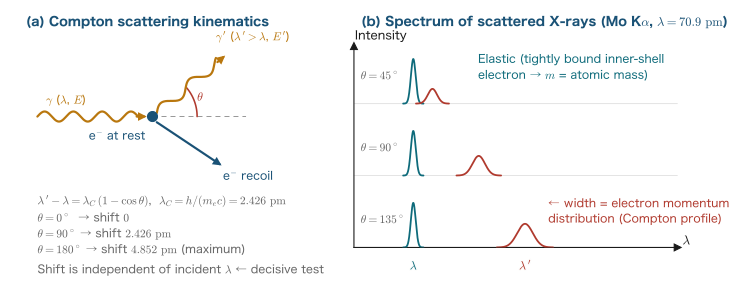
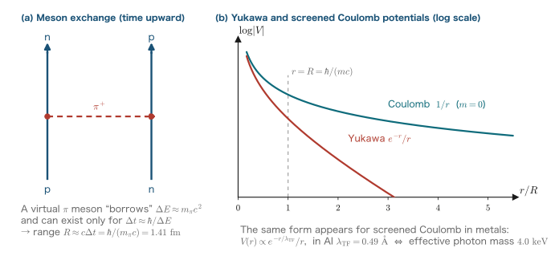
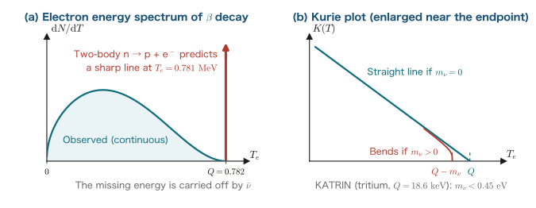

Chapter 2A History of Particle Physics
If we look at the history of particle physics as a chronology, it degenerates into a mere list of names and years. This chapter does not take that approach. What we want to know is not “what was discovered when” but two kinds of logic: why people came to think that a given particle was needed, and why that experiment was able to see it.
The former is the logic of theory. The beta-decay spectrum is continuous, so a light neutral particle is needed. The range of the nuclear force is $1.4\ \mathrm{fm}$, so a meson of $140\ \mathrm{MeV}$ is needed. A relativistic wave equation has negative-energy solutions, so an antiparticle is needed. The $\Delta^{++}$ is seen in apparent violation of Fermi statistics, so color is needed. In every case the pattern is the same: there is one experimental fact that cannot be explained, and we add one minimal assumption to rescue it. Particle physics is the result of repeating this operation for 100 years.
The latter is the logic of apparatus and materials. The positron was seen in the supersaturated vapor of a cloud chamber. The $\pi$ meson was seen in a gelatin emulsion in which silver bromide was dispersed. The $\Omega^-$ was seen in an $80$-inch liquid-hydrogen bubble chamber. The top quark was seen only when silicon track detectors attained a vertex resolution of $10\ \mu\mathrm{m}$. Every discovery has an upper limit set by the performance of the materials available at the time. For readers who specialize in materials science, this is not someone else’s concern.
This chapter follows these two kinds of logic in parallel. At various points we also show examples in which the tools born there survive unchanged as measurement methods of materials science. Rutherford scattering lives on as Rutherford backscattering spectrometry (RBS), Compton scattering as the measurement of Compton profiles, the Yukawa potential as Thomas–Fermi screening in metals, and Dirac’s hole as the hole in semiconductors and as positron annihilation spectroscopy, each in a changed form. Particle physics and materials science share the same toolbox.
- What Thomson’s $e/m$ measurement and the Rutherford scattering formula assert, and why they are the prototype of today’s elastic scattering experiments
- The derivation of the Compton wavelength $h/mc = 2.426\ \mathrm{pm}$ and the relativistic kinematics behind it
- Deriving the relation $R\sim\hbar/(mc)$ between the range of a force and the mass of its mediator from the uncertainty relation
- Why the $\mu$ and the $\pi$ were confused, and how the two-meson hypothesis (Sakata and Tanikawa) resolved it
- The negative-energy solutions of the Dirac equation and hole theory, and the discovery of the positron and the antiproton
- The difficulty posed by the continuous spectrum of beta decay, and the story of the neutrino hypothesis up to the Reines–Cowan experiment
- The derivation of the Gell-Mann–Nishijima relation $Q = I_3 + (B+S)/2$ and its check against real hadrons
- How to read the octets and decuplets (weight diagrams) of SU(3), and the mass prediction for the $\Omega^-$
- The quark model, and how the spin–statistics problem of the $\Delta^{++}$ demands color
- From the November Revolution to the completion of the Standard Model, and what the Standard Model cannot explain
- What each of the cloud chamber, nuclear emulsion, scintillator, bubble chamber, and semiconductor detector measures
2.1 The Classical Era 1897–1932
2.1.1 Thomson’s $e/m$ — the discovery of “something smaller than the atom”
At the end of the 19th century, the true nature of the cathode rays emerging from vacuum discharge tubes was a matter of dispute. German researchers thought they were “waves in the ether,” while British researchers thought they were “a stream of charged particles.” What settled the matter was J. J. Thomson’s experiment of 1897.
Thomson’s apparatus is simple. The cathode rays are passed through a parallel-plate capacitor of length $L$ (electric field $E$) and a magnetic field $B$ applied over the same region. Let the particle’s charge be $q$, its mass $m$, and its speed $v$. The procedure has two stages (determining the speed and measuring the deflection angle), and finally the two are combined.
Derivation: Thomson’s velocity-selection method and $e/m$
Step 1: Apply both the electric and the magnetic field, and adjust them so that the beam is not deflected. The force due to the electric field is $qE$ (perpendicular to the plates), and the force due to the magnetic field is $qvB$ (if the fields are arranged perpendicular to each other, this too is perpendicular to the plates, in the opposite direction). When these balance,
$$ qE = qvB \quad\Longrightarrow\quad v = \frac{E}{B} $$Note that the charge $q$ cancels from both sides. That is, this operation alone determines the speed without our knowing the value of the charge. This is a velocity selector.
Step 2: Switch off the magnetic field and bend the beam with the electric field alone. The time the particle spends between the plates is $t = L/v$. The transverse acceleration it undergoes during that time is $a = qE/m$, so the transverse velocity at the exit is $v_\perp = at = qEL/(mv)$. Therefore the deflection angle $\theta$ is
$$ \tan\theta = \frac{v_\perp}{v} = \frac{qEL}{mv^2} $$Step 3: Substitute the result of Step 1, $v=E/B$.
Everything on the right-hand side is a measurable quantity. The value Thomson obtained was about $1000$ times the $q/m$ of the hydrogen ion known at the time (with the modern value, $1836$ times).
Here the logic begins to bite. That $q/m$ is large means either (a) the charge is abnormally large or (b) the mass is abnormally small. Thomson showed that $q/m$ takes the same value whether the cathode material (aluminum, iron, platinum) or the gas in the tube (air, hydrogen, carbon dioxide) is changed. That is, this particle is a universal constituent independent of the kind of matter. If so, it is natural to adopt (b), that is, to interpret the mass as small. In this way “something smaller than the atom,” the electron, was discovered.
Why is this the “beginning of particle physics”?
The “fundamental element” in physics up to then was the atom. The English word atom derives from the Greek $\alpha$-$\tau o \mu o \varsigma$ (that which cannot be divided). Thomson’s discovery showed that this etymology was mistaken.
More important is the methodology. Thomson did not “see” the electron. Through a known interaction, the electromagnetic field, he measured an internal parameter ($q/m$) of an unknown particle. Every experiment in particle physics has this form. Colliding particles in an accelerator is likewise nothing other than using a known interaction (the electromagnetic interaction, the weak interaction) as a “ruler” to read off the properties of an unknown object.
2.1.2 Rutherford scattering — the discovery of the atomic nucleus
Thomson proposed a model for how the electrons he had discovered are arranged inside the atom: electrons are embedded in a uniform sphere of positive charge (the pudding). What tested this was the $\alpha$-particle scattering experiment (1909–1911) performed by Geiger and Marsden under Rutherford’s direction.
The experiment is as follows. $\alpha$ particles (kinetic energy $E \approx 7.7\ \mathrm{MeV}$, charge $+2e$) emitted by a radioactive nuclide of the radium series are directed at a gold foil about $0.4\ \mu\mathrm{m}$ thick. The scattered $\alpha$ particles strike a fluorescent screen of zinc sulfide, ZnS, and emit faint flashes. These were counted by the human eye, looking through a microscope in a dark room. This was the very first scintillation detector (later replaced by a scintillator plus photomultiplier tube, and still in use today).
Derivation: The Rutherford scattering formula
Step 1: Setup. A particle of charge $z_1 e$, mass $m$, and speed $v$ flies along a line displaced by an impact parameter $b$ from the center of a fixed charge $z_2 e$. The Coulomb force is repulsive:
$$ F(r) = \frac{z_1 z_2 e^2}{4\pi\varepsilon_0 r^2} \equiv \frac{\kappa}{r^2}, \qquad \kappa \equiv \frac{z_1 z_2 e^2}{4\pi\varepsilon_0} $$The orbit under a $1/r^2$ force is a hyperbola (the repulsive version of the Kepler problem).
Step 2: The relation between $b$ and the scattering angle $\theta$. From an analysis of the hyperbolic orbit (or by integrating the change of momentum with the angular-momentum conservation $mvb = mr^2\dot\varphi$),
$$ \begin{equation} b = \frac{\kappa}{m v^2}\cot\frac{\theta}{2} = \frac{\kappa}{2E}\cot\frac{\theta}{2} \label{eq:2-b-theta} \end{equation} $$Here we used $E=\tfrac12 mv^2$. This is the intuitive relation that the smaller $b$ is (that is, the closer to head-on), the larger $\theta$ is.
Step 3: Translate into a cross section. Particles passing between $b$ and $b+\dd b$ are scattered between $\theta$ and $\theta+\dd\theta$. The incident area $\dd\sigma = 2\pi b\,\abs{\dd b}$ corresponds to the solid angle $\dd\Omega = 2\pi\sin\theta\,\abs{\dd\theta}$. Therefore
$$ \frac{\dd\sigma}{\dd\Omega} = \frac{b}{\sin\theta}\abs{\frac{\dd b}{\dd\theta}} $$Step 4: Carry out the differentiation. From Eq. \eqref{eq:2-b-theta}, $\dd b/\dd\theta = -\dfrac{\kappa}{4E}\csc^2(\theta/2)$. Using also $\sin\theta = 2\sin(\theta/2)\cos(\theta/2)$, we obtain
$$ \frac{\dd\sigma}{\dd\Omega} = \frac{1}{2\sin\frac\theta2\cos\frac\theta2} \cdot \frac{\kappa}{2E}\frac{\cos\frac\theta2}{\sin\frac\theta2} \cdot \frac{\kappa}{4E}\frac{1}{\sin^2\frac\theta2} $$The $\cos(\theta/2)$ cancels, and four factors of $\sin(\theta/2)$ remain:
This is the Rutherford scattering formula. Its characteristic feature is the divergent angular dependence $\sin^{-4}(\theta/2)$, and the divergence of the cross section as $\theta\to0$ is a consequence of the Coulomb force reaching to infinity (the mediator, the photon, being massless).
Physical Meaning: What does $\sin^{-4}(\theta/2)$ tell us?
In the Thomson model, the positive charge is spread thinly over a sphere of radius $\sim 10^{-10}\ \mathrm{m}$. In this case the force on an $\alpha$ particle is weak, and the scattering is the accumulation of many small deflections, so by the central limit theorem the distribution of scattering angles is a Gaussian $\propto\exp(-\theta^2/2\theta_0^2)$, with $\theta_0$ at most about $1^\circ$. The probability of being bounced back by $90^\circ$ or more is suppressed by $\ee^{-\theta^2/2\theta_0^2}$ and is effectively zero.
In the experiment, however, about one in $8000$ $\alpha$ particles was bounced back by $90^\circ$ or more. Eq. \eqref{eq:2-rutherford} falls off only as a power at large $\theta$, so it reproduces this frequency correctly. Rutherford’s famous remark, “It was as if you fired a $15$-inch shell at a piece of tissue paper and it came back and hit you,” captures the difference between an exponential and a power function.
The reason for the power law is clear: the center of the $1/r^2$ force is a point. If the center of force were extended, then once the wavelength $\lambda$ became shorter than the extent, the form factor would take effect and the cross section would drop. Conversely, by looking at the angle at which the cross section begins to deviate from the Rutherford formula, we can learn the size of the internal structure of the target. This argument carries over directly to the measurement of the proton form factor by electron–proton scattering (Hofstadter, 1956), and further to the discovery of quarks by deep inelastic scattering (SLAC, 1969).
![Figure 2.1. Left: the geometry of Rutherford scattering. An incident α particle is bent by the Coulomb field of the nucleus and scattered through an angle θ; the impact parameter b is indicated. Upper right: the Thomson model and the Rutherford model. Lower right: a logarithmic plot of the scattering-angle distributions of the two models. The Thomson model gives a Gaussian distribution that falls rapidly at large angles; the Rutherford model gives a power law, sin to the power −4, that survives even at large angles; the measured points lie on the latter.](figs/ch02_fig2-1.svg)
Numerical Example: What the distance of closest approach tells us
In a head-on collision ($b=0$), the $\alpha$ particle stops at the point where all of its kinetic energy has been converted into Coulomb potential energy:
$$ E = \frac{z_1 z_2 e^2}{4\pi\varepsilon_0 d} \quad\Longrightarrow\quad d = \frac{z_1 z_2}{E}\times \frac{e^2}{4\pi\varepsilon_0} = \frac{z_1 z_2}{E}\times 1.44\ \mathrm{MeV\,fm} $$Here we used $e^2/(4\pi\varepsilon_0) = \alpha\,\hbar c = (1/137.036)\times197.327\ \mathrm{MeV\,fm} = 1.44\ \mathrm{MeV\,fm}$ (we shall use this constant repeatedly, so it is worth memorizing). When an $\alpha$ particle ($z_1=2$) hits gold ($z_2=79$) with $E=7.7\ \mathrm{MeV}$,
$$ d = \frac{2\times79\times1.44}{7.7}\ \mathrm{fm} = 29.5\ \mathrm{fm} $$On the other hand, the radius of a gold nucleus is $R \approx 1.2\,A^{1/3}\ \mathrm{fm} = 1.2\times197^{1/3} = 7.0\ \mathrm{fm}$. Since $d \approx 4R$, the $\alpha$ particle does not touch the nucleus. That is why Eq. \eqref{eq:2-rutherford} reproduced the experiment perfectly. Conversely, adding the radius of the $\alpha$ particle itself, $R_\alpha = 1.2\times4^{1/3} = 1.9\ \mathrm{fm}$, we have $d < R+R_\alpha \approx 8.9\ \mathrm{fm}$, that is, deviations due to the nuclear force should appear from about $E \gtrsim 227.5/8.9 \approx 26\ \mathrm{MeV}$ (if the range of the nuclear force is taken into account, the threshold goes down further). Indeed, in experiments bombarding gold with $\alpha$ particles, deviations from the Rutherford formula at backward angles are observed from $E_\alpha\approx25$–$28\ \mathrm{MeV}$.
Connection to Materials Science: Rutherford backscattering spectrometry (RBS)
Rutherford’s experiment remains in active use, unchanged, as a method for analyzing the composition and depth profile of thin films. A $1$–$3\ \mathrm{MeV}$ $\mathrm{He}^+$ beam is directed at the sample, and the energy of the ions bounced back at $\theta\approx170^\circ$ is measured with a semiconductor detector. This is Rutherford backscattering spectrometry (RBS).
Only two equations are used. First, the kinematic factor $K = E_1/E_0$ when an incident ion of mass $M_1$ is elastically scattered by a stationary atom of mass $M_2$:
$$ \begin{equation} K = \left[ \frac{\sqrt{M_2^2 - M_1^2\sin^2\theta} + M_1\cos\theta}{M_1+M_2} \right]^{2} \label{eq:2-rbs-K} \end{equation} $$This is nothing but the solution of energy and momentum conservation, the same as the elastic collision of high-school physics. Using $\mathrm{He}$ ($M_1=4$) with $E_0 = 2.0\ \mathrm{MeV}$ at $\theta=170^\circ$ gives
- gold ($M_2=197$): $K=0.923$, $E_1 = 1.845\ \mathrm{MeV}$
- silicon ($M_2=28$): $K=0.565$, $E_1 = 1.130\ \mathrm{MeV}$
The two differ by as much as $700\ \mathrm{keV}$, so an Au thin film on a Si substrate can be separated at a glance. The energy of the scattered ion tells us the mass of the atom that was struck.
Second, the $z_2^2$ dependence of Eq. \eqref{eq:2-rutherford}. Since the yield is proportional to the square of the atomic number, the composition ratio is obtained without absolute calibration (which is why RBS is called a “quantitative method that needs no reference sample”). Furthermore, as an ion travels through the sample it loses energy by the amount of the stopping power $\dd E/\dd x$, so even for the same element, ions scattered deeper down are shifted to the lower-energy side. This gives the depth resolution (typically $10$–$20\ \mathrm{nm}$).
That is, the equation that discovered the atomic nucleus in 1911 is used every day in thin-film process evaluation laboratories in 2026. Learning the scattering theory of particle physics is the same as learning the principles of materials characterization.
2.1.3 The Bohr model — admitting the breakdown of classical mechanics
The Rutherford model had a fatal flaw. An electron in circular motion is accelerating, so according to classical electromagnetism it radiates electromagnetic waves and loses energy. A calculation shows that a hydrogen atom would fall into the nucleus in about $10^{-11}\ \mathrm{s}$. The very fact that atoms exist stably cannot be explained.
Bohr (1913) circumvented this by postulating the quantization of angular momentum, $L = n\hbar$ (later generalized by Wilson and Sommerfeld to the phase-integral quantum condition $\oint p\,\dd q = n h$). The resulting energy levels are
$$ \begin{equation} E_n = -\frac{1}{2}\,m_e c^2\,\frac{(Z\alpha)^2}{n^2} = -\frac{13.606\,Z^2}{n^2}\ \mathrm{eV} \label{eq:2-bohr} \end{equation} $$Here $\alpha = e^2/(4\pi\varepsilon_0\hbar c) = 1/137.036$ is the fine-structure constant, which will be one of the protagonists of this book. As a check, $\tfrac12\times0.511\times10^6\ \mathrm{eV}\times(1/137.036)^2 = 13.6\ \mathrm{eV}$.
The Bohr radius is $a_0 = \hbar/(m_e c\,\alpha) = 0.0529\ \mathrm{nm}$. What deserves attention here is that the combination $\hbar/(m_e c)$ makes its appearance. This is the Compton wavelength of the next section, and it is related by $a_0 = (\hbar/m_ec)/\alpha = 137\times 386\ \mathrm{fm}$. The length scale of particle physics and the length scale of materials science are linked by the single number $\alpha$.
2.1.4 The discovery of the neutron (1932)
The mass of atomic nuclei was about twice the value expected from the number of protons. In 1930, Bothe and Becker found that when beryllium is bombarded with $\alpha$ particles, an extremely penetrating neutral radiation is emitted. The Joliot-Curies interpreted this as high-energy $\gamma$ rays, but Chadwick (1932) rejected this. His argument is purely kinematic.
Derivation: How Chadwick determined the mass
Step 1: An unknown neutral particle (mass $m$, speed $v$) collides head-on elastically with a nucleus of mass $M$ at rest. By the formula for a nonrelativistic elastic collision, the recoil velocity acquired by the target is
$$ V = \frac{2m}{m+M}\,v $$Step 2: Use two kinds of target. Using hydrogen (protons in paraffin, $M=m_p$) and nitrogen ($M=14m_p$), we measure the maximum velocity of the recoil particles with an ionization chamber:
$$ V_{\mathrm{H}} = \frac{2m}{m+m_p}v, \qquad V_{\mathrm{N}} = \frac{2m}{m+14m_p}v $$Step 3: Taking the ratio eliminates the unknown $v$.
$$ \frac{V_{\mathrm{H}}}{V_{\mathrm{N}}} = \frac{m+14m_p}{m+m_p} $$Step 4: Insert the measured values. Chadwick’s measured values are $V_{\mathrm{H}} = 3.3\times10^7\ \mathrm{m/s}$ and $V_{\mathrm{N}} = 4.7\times10^6\ \mathrm{m/s}$, so the ratio is $7.0$. Solving this gives
$$ 7.0\,(m+m_p) = m+14m_p \quad\Longrightarrow\quad 6.0\,m = 7.0\,m_p \quad\Longrightarrow\quad m \approx 1.16\,m_p $$Given the measurement accuracy, $m\approx m_p$. That is, there exists a neutral particle with almost the same mass as the proton. This is the neutron.
Caution: Why the $\gamma$ ray hypothesis did not work
If the unknown radiation were a $\gamma$ ray, then knocking a proton out at $3.3\times10^7\ \mathrm{m/s}$ (kinetic energy $5.7\ \mathrm{MeV}$) would require $E_\gamma \gtrsim 55\ \mathrm{MeV}$ by the kinematics of Compton scattering. However, the $\alpha$ rays emitted by the polonium source $^{210}\mathrm{Po}$ have $5.3\ \mathrm{MeV}$, and the $Q$ value of the reaction $^9\mathrm{Be}(\alpha,n)^{12}\mathrm{C}$ is $5.70\ \mathrm{MeV}$, so the available energy totals only about $11\ \mathrm{MeV}$. This falls short of $55\ \mathrm{MeV}$ by a factor of five, and the law of energy conservation would be violated.
Moreover, if one tries to explain the nitrogen recoil at the same time, the required $E_\gamma$ takes a different value for each target, which is contradictory. Asking “can a single hypothesis explain all the data at the same time?” is the way of particle physics, and Chadwick put this into practice.
With the discovery of the neutron, the picture of the atomic nucleus as made of protons and neutrons was complete. And immediately the next question arises: the positive charges repel one another by the Coulomb force, so why does the nucleus not fly apart? There must be a new force that binds the nucleons. The search for the particle that mediates this force is the subject of Section 2.3.
2.2 The Photon 1900–1924
2.2.1 Three stages in establishing the “particle nature of light”
The acceptance of the photon did not happen all at once; it went through three stages. If we distinguish “what was newly demonstrated” at each stage, the structure of the argument becomes much clearer.
| Year | Person | Phenomenon | What was newly shown |
|---|---|---|---|
| 1900 | Planck | Blackbody radiation | The energy of an oscillator is discretized as $E=nh\nu$ (the exchange of radiation is quantized) |
| 1905 | Einstein | Photoelectric effect | Light itself exists as lumps of energy $h\nu$ |
| 1923 | Compton | Wavelength shift of X-rays (Compton scattering) | The lump of light also carries momentum $h/\lambda$ and undergoes a particle-to-particle collision with an electron that is elastic (as a two-body process). From the X-ray’s point of view it passes energy to the recoil electron, so it is called “inelastic scattering” |
Planck called his own quantum hypothesis “an act of desperation” and did not think that light itself is a particle. The exchange of energy might be discrete simply because of a property of the oscillators in the wall. Einstein blocked that escape route. And Compton showed experimentally the last condition for being a particle (having momentum and obeying the kinematics of collisions).
2.2.2 The photoelectric effect — the work function as a materials quantity
When light of frequency $\nu$ strikes a metal surface, electrons are ejected. Einstein’s claim is the following single line.
$$ \begin{equation} K_{\max} = h\nu - W \label{eq:2-photoelectric} \end{equation} $$Here $W$ is the work function, that is, the minimum energy required to lift an electron from the Fermi level inside the solid up to the vacuum level. This equation differs decisively from the classical wave theory in the following three points.
- Existence of a threshold: If $h\nu < W$, no electrons appear however intense the light. In the wave theory, electrons should eventually appear if the light is made intense enough.
- $K_{\max}$ does not depend on the intensity: The intensity changes only the number of ejected electrons.
- The slope is $h$: When $K_{\max}$ is plotted against $\nu$, the slope of the straight line is the Planck constant, independent of the material. Millikan confirmed this precisely in 1916 (he himself did not believe Einstein’s light-quantum hypothesis and performed the experiment intending to refute it).
Physical Meaning: $W$ is a materials quantity, not a particle-physics quantity
In Eq. \eqref{eq:2-photoelectric} only $h$ is universal, while $W$ differs completely from one substance to another: cesium $2.1\ \mathrm{eV}$, aluminum $4.1\ \mathrm{eV}$, tungsten $4.5\ \mathrm{eV}$, gold $5.1\ \mathrm{eV}$. Even for the same gold it differs by about $0.3\ \mathrm{eV}$ depending on the crystal face, and with surface adsorption it shifts by amounts of the order of $1\ \mathrm{eV}$.
In other words, the photoelectric experiment is a rare example in which the universal constant $h$ and the material constant $W$ coexist in a single equation. Today this equation is used not in particle physics but as a tool of surface science: the secondary-electron cutoff in ultraviolet photoelectron spectroscopy (UPS) and the Kelvin probe are instruments that measure $W$ directly, and X-ray photoelectron spectroscopy (XPS) applies the same equation $E_B = h\nu - K - W$ to core levels to read off the elements and chemical states (in XPS, too, $W$ can be obtained from the secondary-electron edge). When materials researchers design the barrier height at an electrode/semiconductor interface in an electronic device, what they use routinely is Einstein’s equation of 1905.
2.2.3 Derivation of Compton scattering
Compton directed the characteristic X-rays of molybdenum (Mo K$\alpha$, wavelength $\lambda = 0.0709\ \mathrm{nm}$, energy $17.5\ \mathrm{keV}$) onto graphite and measured the wavelength of the scattered X-rays with a Bragg spectrometer using a calcite crystal. Then, besides a component with the same wavelength as the incident wavelength, a component with increased wavelength appeared, and its shift grew with the scattering angle. In classical Thomson scattering (an oscillating electron reradiates at the same frequency), the wavelength never changes.
Derivation: The Compton formula and the Compton wavelength
Step 1: Write in terms of four-momenta (natural units $\hbar=c=1$). Let the incident photon be $p^\mu$, the electron at rest $k^\mu=(m,\bm 0)$, the scattered photon $p'^\mu$, and the recoil electron $k'^\mu$. The conservation law is then
$$ p + k = p' + k' $$Since the recoil electron is not measured, we want to eliminate $k'$. So we move terms to obtain
$$ k' = p + k - p' $$Step 2: Square both sides. The square of a four-vector is the invariant mass squared, so $k'^2 = m^2$, $k^2=m^2$, and $p^2=p'^2=0$ (the photon is massless).
$$ m^2 = (p+k-p')^2 = \underbrace{p^2}_{0} + k^2 + \underbrace{p'^2}_{0} + 2p\cdot k - 2p\cdot p' - 2k\cdot p' $$Cancelling $k^2=m^2$ against the $m^2$ on the left-hand side gives
$$ \begin{equation} 0 = p\cdot k - p\cdot p' - k\cdot p' \label{eq:2-compton-inv} \end{equation} $$The recoil electron has now disappeared completely. This is the advantage of writing in terms of four-vectors.
Step 3: Write each dot product in components. Let the energy of the incident photon be $E$, that of the scattered photon $E'$, and the scattering angle $\theta$. For photons, $p^\mu=(E,\bm p)$ and $\abs{\bm p}=E$, so
$$ p\cdot k = E m - \bm p\cdot\bm 0 = mE, \qquad k\cdot p' = mE', $$ $$ p\cdot p' = EE' - \bm p\cdot\bm p' = EE' - EE'\cos\theta = EE'(1-\cos\theta) $$Step 4: Substitute into Eq. \eqref{eq:2-compton-inv}.
$$ 0 = mE - EE'(1-\cos\theta) - mE' \quad\Longrightarrow\quad m(E-E') = EE'(1-\cos\theta) $$Dividing both sides by $mEE'$ gives a clean form:
$$ \begin{equation} \frac{1}{E'} - \frac{1}{E} = \frac{1-\cos\theta}{m} \label{eq:2-compton-E} \end{equation} $$Step 5: Return to wavelengths. Restoring $\hbar,c$, the photon has $E = hc/\lambda$, so $1/E = \lambda/(hc)$. Eq. \eqref{eq:2-compton-E} becomes
Step 6: Obtain $\lambda_C$ numerically. Since $h c = 2\pi\hbar c = 2\pi\times197.327\ \mathrm{MeV\,fm} = 1239.84\ \mathrm{MeV\,fm}$ and $m_ec^2 = 0.511\ \mathrm{MeV}$,
$$ \lambda_C = \frac{hc}{m_ec^2} = \frac{1239.84\ \mathrm{MeV\,fm}}{0.511\ \mathrm{MeV}} = 2426\ \mathrm{fm} = 2.426\ \mathrm{pm} = 0.02426\ \mathrm{nm} $$This is the Compton wavelength.
Caution: The two conventions for $\lambda_C$ and $\bar\lambda_C$
In this book we call $\lambda_C = h/(m_ec) = 2.426\ \mathrm{pm}$ the Compton wavelength. In field theory, on the other hand, one more often uses the reduced Compton wavelength $\hbar/(m_ec) = \lambda_C/2\pi = 386.2\ \mathrm{fm}$, with the $2\pi$ dropped, and this too is called the “Compton wavelength.” What appears in the range of the Yukawa potential (Section 2.3) and in the propagators of field theory is always $\hbar/(mc)$. When numbers fail to agree because of a discrepancy of $2\pi$, suspect this first.
It is also convenient to remember the relation to the Bohr radius: $a_0 = \dfrac{\hbar/(m_ec)}{\alpha} = 137.036\times386.2\ \mathrm{fm} = 0.0529\ \mathrm{nm}$. That is, the size of an atom = the electron’s Compton wavelength ÷ the fine-structure constant.

Connection to Materials Science: The Compton profile and the electron momentum density
Eq. \eqref{eq:2-compton} was derived under the assumption that the electron is at rest. Electrons in a real solid have momenta that fill the entire Fermi sphere, so the Compton peak is not a point but has a width. This width is precisely the information.
Under the impulse approximation (the approximation that regards the collision as much faster than the orbital period of the electron), the double differential cross section can be written as
$$ \begin{equation} \frac{\dd^2\sigma}{\dd\Omega\,\dd E'} \propto J(p_z), \qquad J(p_z) = \iint n(\bm p)\,\dd p_x\,\dd p_y \label{eq:2-compton-profile} \end{equation} $$Here $n(\bm p)$ is the electron momentum density of the ground state, and $p_z$ is the momentum component along the scattering vector. We call $J(p_z)$ the Compton profile. That is, by scattering X-rays and measuring the shape of the energy spectrum, we can directly extract the momentum distribution of the occupied states, integrated over $2$ directions.
What can be seen. For a free electron gas, $n(\bm p)$ is a sphere of radius $p_F$ (the Fermi sphere), so $J(p_z)$ is a parabola for $\abs{p_z}<p_F$ and zero for $\abs{p_z}>p_F$, and a kink (the Fermi break) appears at $p_F$. For aluminum, $k_F = 1.75\ \text{Å}^{-1}$; converting to atomic units, $p_F = 1.75/1.8897 = 0.926\ \mathrm{a.u.}$, and the measured Compton profile has its kink exactly at that position. In terms of energy, $p_F c = 3.45\ \mathrm{keV}$ (the same number appears later in positron annihilation).
Furthermore, in magnetic Compton scattering using circularly polarized X-rays, one can extract the momentum density $J_{\mathrm{mag}}(p_z)$ of the spin-polarized electrons only, and measure the pure spin moment, which does not include the orbital magnetic moment. This is a technique used routinely at synchrotron radiation facilities such as SPring-8 in studies of rare-earth magnets and magnetic oxides.
In short, the “peak shift” that Compton measured in 1923 to demonstrate the particle nature of the photon has given way today to the “width of the peak” as the main actor; the width has become an experimental quantity that can be compared directly with $n(\bm p)$ obtained from first-principles calculations. Here computational science and the kinematics of particle physics join into one.
Math Note: Why did we square the four-momentum?
The technique used in Step 2 appears repeatedly throughout this book, so it is worth remembering as a pattern.
For a particle you do not want to measure (here, the recoil electron), gather only that particle on one side of the conservation equation and square both sides. Then the square of the four-vector becomes the invariant mass squared $m^2$, a known number, and all momentum components of that particle disappear.
Since this is written only with Lorentz-invariant quantities, the answer is the same whether it is computed in the laboratory frame or the center-of-mass frame. When we treat relativistic kinematics systematically in Chapter 4, this operation is generalized into the form of the “Mandelstam variables.”
2.3 Mesons 1934–1947
2.3.1 Two conditions imposed on the nuclear force
The problem posed by the discovery of the neutron (1932) is clear. Inside the nucleus, protons are squeezed together at distances of about $1\ \mathrm{fm}$. The Coulomb repulsion energy at this distance is
$$ \frac{e^2}{4\pi\varepsilon_0 r} = \frac{1.44\ \mathrm{MeV\,fm}}{1\ \mathrm{fm}} = 1.44\ \mathrm{MeV} $$A force that overcomes this and binds the nucleons is needed. Moreover, experiments had imposed two conditions on that force.
- Very strong. The binding energy per nucleon is about $8\ \mathrm{MeV}$, an order of magnitude larger than the Coulomb energy.
- Extremely short range. The nuclear radius is $R\approx1.2A^{1/3}\ \mathrm{fm}$, so the volume is proportional to $A$ (that is, the density is constant). If the force were long-range, all nucleons would attract one another and the density would increase with $A$. That the density saturates means that each nucleon interacts with only a few neighbors. Moreover, atoms (on the scale of $10^5\ \mathrm{fm}$) show no trace of the nuclear force at all.
The electromagnetic force reaches to infinity. Gravity also reaches to infinity. Forces that cut off at short distances, such as the intermolecular (van der Waals) force and Debye–Hückel screening, were already known at that time, but a force with a finite range that cuts off exponentially, as a fundamental interaction, did not exist in the physics of the day. Hideki Yukawa (conceived in 1934, published in 1935) explained this “finite range” as the mass of the mediator particle.
Derivation: The relation between range and mass, $R\sim\hbar/(mc)$
Step 1: Suppose that the force is transmitted by the exchange of a particle. Just as the electromagnetic force is transmitted by the exchange of photons, suppose that the nuclear force is transmitted by the exchange of some particle (of mass $m$). Nucleon A emits this particle and nucleon B absorbs it.
Step 2: The emission violates energy conservation. If a nucleon at rest emitted a particle of mass $m$, the energy would fall short by at least $\Delta E = mc^2$. Classically this cannot happen.
Step 3: The uncertainty relation permits a “loan.” By the time–energy uncertainty relation
$$ \Delta E\,\Delta t \sim \hbar $$the energy shortfall is “unobservable” as long as it lasts only for $\Delta t \sim \hbar/\Delta E = \hbar/(mc^2)$. A particle that exists only for this duration is called a virtual particle.
Step 4: Estimate the distance the particle can travel in that time. Since the speed of the particle cannot exceed the speed of light, at most
That is, the heavier the mediator particle, the shorter the range of the force. Conversely, if $m=0$ then $R=\infty$, which is consistent with the fact that the Coulomb force reaches to infinity.
Step 5: Insert numbers. Taking $R\approx 1.4\ \mathrm{fm}$,
$$ mc^2 \sim \frac{\hbar c}{R} = \frac{197.327\ \mathrm{MeV\,fm}}{1.4\ \mathrm{fm}} = 141\ \mathrm{MeV} $$This is about $276$ times the electron mass (Yukawa himself estimated “about $200$ times the electron mass” from $R\approx2\ \mathrm{fm}$). Because its mass lies between those of the proton and the electron, this particle was named the meson (from the Greek $\mu\varepsilon\sigma o\varsigma$, “intermediate”).
Math Note: Deriving the Yukawa potential from the Klein–Gordon equation
Eq. \eqref{eq:2-yukawa-range} is a dimensional analysis and does not determine even the form of the potential. To do it properly, we solve the static Klein–Gordon equation obeyed by a scalar field $\phi$ of mass $m$ in the presence of a point source ($\hbar=c=1$):
$$ (\nabla^2 - m^2)\,\phi(\bm r) = -g\,\delta^3(\bm r) $$For $m=0$ this is just the Poisson equation, and the solution is $g/(4\pi r)$, that is, the Coulomb potential.
Solving by Fourier transform. Substituting $\phi(\bm r) = \displaystyle\int\frac{\dd^3q}{(2\pi)^3}\,\tilde\phi(\bm q)\,\ee^{\ii\bm q\cdot\bm r}$ and using $\nabla^2\to-\bm q^2$, we obtain
$$ (-\bm q^2 - m^2)\tilde\phi(\bm q) = -g \quad\Longrightarrow\quad \tilde\phi(\bm q) = \frac{g}{\bm q^2+m^2} $$This $1/(\bm q^2+m^2)$ is the propagator that we will study in Chapter 8. For the inverse transform, we first carry out the angular integration:
$$ \phi(r) = \frac{g}{(2\pi)^3}\int_0^\infty \dd q\,\frac{q^2}{q^2+m^2} \cdot\frac{4\pi\sin qr}{qr} = \frac{g}{2\pi^2 r}\int_0^\infty \dd q\,\frac{q\sin qr}{q^2+m^2} $$The last integral equals $\dfrac{\pi}{2}\ee^{-mr}$ (by complex integration, or from a table of integrals), so
This is the Yukawa potential. It has the form of $1/r$ multiplied by an exponential screening factor, and the screening length is $1/m = \hbar/(mc)$—precisely the $R$ of Eq. \eqref{eq:2-yukawa-range}. We also see that it returns to the Coulomb potential as $m\to0$.
Connection to Materials Science: The Yukawa potential is the same formula as the screened Coulomb interaction in a metal
A reader who thought “I have seen this somewhere” on seeing Eq. \eqref{eq:2-yukawa-potential} is right. When a point charge $Q$ is placed in a metal, the conduction electrons gather around it and screen the charge. In the Thomas–Fermi approximation, the effective potential is
$$ \begin{equation} V(r) = \frac{Q}{4\pi\varepsilon_0}\,\frac{\ee^{-r/\lambda_{\mathrm{TF}}}}{r}, \qquad \frac{1}{\lambda_{\mathrm{TF}}^2} = k_{\mathrm{TF}}^2 = \frac{e^2}{\varepsilon_0}\,N(E_F) \label{eq:2-thomas-fermi} \end{equation} $$which is the identical formula to the Yukawa potential, differing only in the letters. $N(E_F)$ is the density of states at the Fermi level. For the free electron gas, $N(E_F) = mk_F/(\pi^2\hbar^2)$, so independently of the system of units we can write $k_{\mathrm{TF}}^2 = 4k_F/(\pi a_0)$ ($a_0$ is the Bohr radius).
Numerical check. For aluminum, $k_F = 1.75\ \text{Å}^{-1} = 0.926\ \mathrm{a.u.}$, so
$$ k_{\mathrm{TF}} = \sqrt{\frac{4\times0.926}{\pi}} = 1.086\ \mathrm{a.u.} = 2.05\ \text{Å}^{-1}, \qquad \lambda_{\mathrm{TF}} = 0.49\ \text{Å} $$This is shorter than the lattice constant ($4.05\ \text{Å}$). That is why the charge of an impurity in a metal is almost entirely gone beyond the neighboring atoms. However, this is a statement within the long-wavelength approximation (Thomas–Fermi). In the exact Lindhard response, because of the structure at $q\approx2k_F$, a Friedel oscillation $\cos(2k_Fr)/r^3$ remains in the screened potential as a power law, and this gives rise to, for example, the RKKY interaction in dilute magnetic alloys. One must not look only at the exponential screening and say that “impurities in a dilute alloy cannot see each other at all.”
And reading this correspondence in the opposite direction is interesting. Using Eq. \eqref{eq:2-yukawa-range}, the screening length $\lambda_{\mathrm{TF}}$ can be translated into an “effective photon mass”:
$$ m_\gamma^{\mathrm{eff}} c^2 = \frac{\hbar c}{\lambda_{\mathrm{TF}}} = \frac{197.327\ \mathrm{MeV\,fm}}{4.9\times10^{4}\ \mathrm{fm}} = 4.0\times10^{-3}\ \mathrm{MeV} = 4.0\ \mathrm{keV} $$That is, we may say that inside aluminum the photon has a mass of $4\ \mathrm{keV}$. However, this is a restatement limited to the static longitudinal (electric) response, and moreover it holds only within the Thomas–Fermi approximation (in the exact Lindhard response, the $2k_F$ Friedel oscillation mentioned above is superimposed on the exponential screening). In a normal metal the transverse (magnetic) photon does not acquire mass, and a static magnetic field penetrates the interior of the metal. It is the superconductor, described next, in which even the transverse photon acquires mass, and the prototype of the Higgs mechanism is this latter case.
This idea shows its true power in superconductors. In a superconductor the magnetic field decays exponentially over the London penetration depth $\lambda_L$ (the Meissner effect). This is nothing other than the photon acquiring a mass $m_\gamma c^2 = \hbar c/\lambda_L$; for aluminum ($\lambda_L\approx16\ \mathrm{nm}$, Chapter 1, Table 1.3) it is $12.3\ \mathrm{eV}$ (the measured penetration depth is extended to about $50\ \mathrm{nm}$ by nonlocal effects, in which case it is $3.9\ \mathrm{eV}$). As a mechanism by which a gauge field acquires mass, the theory of superconductivity (Anderson, 1963) comes before the Higgs mechanism of particle physics (1964). The reason why the range of the weak force is only $10^{-3}\ \mathrm{fm}$ (Section 2.10) had already been prepared in 1963, in the language of condensed matter physics. We will follow this line of reasoning in Chapter 13.

2.3.2 A case of mistaken identity — the muon, an impostor
In 1937, Neddermeyer and Anderson, and Street and Stevenson, found in cosmic rays a charged particle with mass $\approx 200\,m_e$ in a cloud chamber. This agreed exactly with the value Yukawa had predicted. Everyone thought, “The meson has been found.”
However, this particle (at first called the “mesotron,” later the $\mu$ particle or muon) had properties that did not add up.
- Its penetrating power is too strong. A particle that mediates the nuclear force should interact violently with the nuclei in matter and be absorbed quickly. Yet the mesotron passes through the atmosphere and reaches deep underground.
- The negative ones are not captured by nuclei. The decisive blow was the experiment of Conversi, Pancini, and Piccioni (1947, Rome). When negative mesotrons were stopped in carbon, a $\mu^-$ should have dropped into an atomic orbital and been absorbed by the nucleus in about $10^{-18}\ \mathrm{s}$. In reality, however, it was not absorbed and decayed with a lifetime of $\approx2\ \mu\mathrm{s}$. The strength of its interaction with the nucleus is $10^{12}$ times weaker than Yukawa’s prediction.
Fermi, Teller, and Weisskopf gave this estimate, and the conclusion that “the mesotron is not the Yukawa particle” was settled. If Yukawa’s theory is correct, the true meson must still be somewhere out there.
Why did the “two-meson hypothesis” arise?
The key to resolving the contradiction is to distinguish “what reaches the ground among cosmic rays” from “what is produced in the upper atmosphere.” Yasutaka Tanikawa (1942) and Shoichi Sakata and Takeshi Inoue (written in 1942, published in 1946) reasoned as follows.
- The Yukawa particle (what we now call the $\pi$) interacts strongly with nuclei, so even if it is produced in the upper atmosphere it is quickly absorbed by a nucleus or decays with a short lifetime. It does not reach the ground.
- As its decay product, a light particle that hardly interacts with nuclei (what we now call the $\mu$) is produced. This one passes through the atmosphere and reaches the ground.
That is, this is a two-step decay chain $\pi\to\mu\to e$. This paper, written in wartime Japan, hardly reached Europe or America, and in 1947 Marshak and Bethe independently arrived at the same conclusion. But in the very month when they wrote their paper, experiment had already given the answer first.
2.3.3 Discovery of the $\pi$ meson (1947) — nuclear emulsion as a material
Powell, Occhialini, Lattes, and their colleagues placed nuclear emulsion at the Pic du Midi Observatory in the Pyrenees (altitude $2877\ \mathrm{m}$) and at Chacaltaya in the Andes ($5200\ \mathrm{m}$).
Nuclear emulsion is a kind of photographic emulsion in which silver bromide (AgBr) microcrystals $0.2$–$0.3\ \mu\mathrm{m}$ in diameter are dispersed at high density in gelatin. When a charged particle passes through, AgBr is ionized and latent-image nuclei (clusters of Ag atoms) are formed; on development, the track emerges as a row of silver grains. Its features are the following.
- Position resolution $\sim1\ \mu\mathrm{m}$. This is still finer than present-day semiconductor detectors ($10\ \mu\mathrm{m}$), and in this respect it remains the best detector even today.
- Always sensitive. It needs neither a power supply nor a trigger. One simply places it on a mountain, waits several weeks, then retrieves and develops it. It is ideal for cosmic-ray experiments.
- Particle identification is possible. The number of silver grains per unit length is proportional to the ionization loss $-\dd E/\dd x$, and by the Bethe–Bloch formula $-\dd E/\dd x \propto z^2/\beta^2$. The grains become denser toward the end of the track, and the mass is determined from how the track “thickens” and from the total range.
In 1947 they found a decisive event in this emulsion. One track stops, another track emerges from that point, and it stops again and emits an electron. This is the chain $\pi\to\mu\to e$. And what is important is that the length of the $\mu$ track was almost the same in every event (about $600\ \mu\mathrm{m}$ in the emulsion).
Derivation: A constant range proves a two-body decay
Step 1: Suppose that a $\pi^+$ at rest decays into two bodies. Let $\pi^+\to\mu^+ + X$ ($X$ is neutral and unknown). By momentum conservation, the magnitudes of the momenta of $\mu$ and $X$ are equal; call it $p$. Energy conservation reads
$$ m_\pi = \sqrt{p^2+m_\mu^2} + \sqrt{p^2+m_X^2} $$This equation can be solved for $p$, so $p$ is uniquely determined. That is, the kinetic energy of the $\mu$ does not vary from event to event.
Step 2: Find $p$ with $m_X=0$ (a neutrino). If $m_X=0$, then $\sqrt{p^2+m_X^2}=p$, so
$$ m_\pi - p = \sqrt{p^2+m_\mu^2} \;\Longrightarrow\; m_\pi^2 - 2m_\pi p + p^2 = p^2 + m_\mu^2 $$ $$ \begin{equation} p = \frac{m_\pi^2-m_\mu^2}{2m_\pi} \label{eq:2-pi-mu-p} \end{equation} $$Step 3: Insert numbers. With $m_\pi=139.570\ \mathrm{MeV}$ and $m_\mu=105.658\ \mathrm{MeV}$,
$$ p = \frac{139.570^2-105.658^2}{2\times139.570} = \frac{19479.8-11163.6}{279.14} = \frac{8316.2}{279.14} = 29.79\ \mathrm{MeV} $$The kinetic energy of the muon is
$$ T_\mu = \sqrt{p^2+m_\mu^2}-m_\mu = \sqrt{887.4+11163.6}-105.658 = 109.78-105.658 = 4.12\ \mathrm{MeV} $$Step 4: Conclusion. If $T_\mu$ is always $4.12\ \mathrm{MeV}$, the range in the emulsion is also always the same (the range is a single-valued function of the kinetic energy). The measured range $\approx600\ \mu\mathrm{m}$ is consistent with this $T_\mu$.
If instead the decay were a three-body decay $\pi\to\mu+X+Y$, the energy of the $\mu$ would have a continuous spectrum and the range would be expected to scatter. The single observation that the ranges are uniform establishes that the decay is two-body and that its partner is a single neutral particle. This is exactly the reverse of the argument about beta decay that we will see in Section 2.5.
The masses of the $\pi$ mesons are $m_{\pi^\pm}=139.570\ \mathrm{MeV}$ and $m_{\pi^0}=134.977\ \mathrm{MeV}$. This came 12 years after Yukawa’s prediction ($\sim100$–$140\ \mathrm{MeV}$). In 1949 Yukawa became the first Japanese to receive a Nobel Prize.
Caution: The $\pi$ turned out not to be an “elementary particle”
In today’s understanding, the $\pi$ meson is a bound state of $u,d$ quarks and antiquarks, and is not an elementary particle. The nuclear force, too, is merely a residual effect of the color force between quarks (Chapter 11)—in the same sense that the van der Waals force between molecules is a remnant of the electromagnetic force.
However, this does not mean that Yukawa’s theory has become invalid. In the low-energy region of nuclear physics, the nucleon–nucleon potential based on $\pi$ exchange (the one-pion-exchange potential, OPEP) is still quantitatively effective. The idea of an effective theory—choosing the appropriate degrees of freedom at the appropriate energy scale—is exactly the same in particle physics and in materials science (for example, the procedure of constructing a classical force field from first-principles calculations).
2.4 Antiparticles 1930–1956
2.4.1 The “disease” of negative-energy solutions
Dirac (1928) was looking for a relativistic wave equation for the electron. The relation between energy and momentum is
$$ E^2 = \bm p^2c^2 + m^2c^4 $$. If we simply replace $E\to\ii\hbar\partial_t$ and $\bm p\to-\ii\hbar\nabla$, we obtain the Klein–Gordon equation, but this is second order in time, so the probability density is not positive definite. Dirac demanded an equation that is first order in time, introduced $4\times4$ matrices (the $\gamma$ matrices), and obtained
$$ (\ii\hbar\gamma^\mu\partial_\mu - mc)\psi = 0 $$(details in Chapter 9). This equation automatically contains spin $1/2$ and predicts the electron’s magnetic moment $g=2$, a dramatic success. At the same time, however, it came with an unavoidable side effect. When we insert a plane-wave solution, both
$$ E = \pm\sqrt{\bm p^2c^2+m^2c^4} $$are solutions. The negative sign cannot be discarded. The reason is that the solutions of the Dirac equation must form a complete set, and the positive-energy solutions alone are not closed under interactions.
This is serious. A positive-energy electron can emit a photon and fall into a state at or below $E=-mc^2$, and from there it can fall still lower. Since the energy has no lower bound, every electron would keep falling forever while radiating light. Matter should disappear instantly.
2.4.2 Hole theory — the “already filled” resolution
Dirac’s resolution (1930) is bold. The negative-energy states are already all filled with electrons. Since electrons are fermions, the Pauli exclusion principle applies, and a positive-energy electron has nowhere to fall. This sea of filled negative-energy states is called the Dirac sea.
This picture immediately yields the following prediction. If we give an electron in the sea an energy $E\ge 2mc^2$, it is kicked up into a positive-energy state. A hole is then left in the sea. The hole behaves as if it
- has charge $-(-e) = +e$,
- has energy $-(-E) = +E > 0$, and
- has the same mass $m$ as the electron.
That is, it is a particle with the same mass as the electron and the opposite charge. Dirac at first took it to be the proton, but Weyl and Oppenheimer pointed out that “by symmetry the mass must be the same as the electron’s,” and in 1931 Dirac admitted that it was an “unknown new particle.”
Physical Meaning: Dirac holes and holes in semiconductors
Readers who have studied materials science should find this argument familiar, because the logic is exactly the same as that of the band structure of a semiconductor.
| Dirac sea (vacuum) | Semiconductor (crystal) | |
|---|---|---|
| Lower continuum | Negative-energy states ($E\le-mc^2$) | Valence band |
| Upper continuum | Positive-energy states ($E\ge+mc^2$) | Conduction band |
| Gap | $2mc^2 = 1.022\ \mathrm{MeV}$ | $E_g$ ($1.12\ \mathrm{eV}$ for Si) |
| Ground state | Everything below is filled, everything above is empty | Same (intrinsic semiconductor at $T=0$) |
| Excitation | Electron–positron pair production | Electron-hole pair production |
| Charge of the hole | $+e$ | $+e$ |
| Reverse process | Pair annihilation $e^+e^-\to2\gamma$ | Recombination (light-emitting diode) |
Only the scale differs, by a factor of $10^6$; the logical structure is identical. On the solid-state side, Peierls (1929, in explaining the anomalous Hall effect) arrived independently at the concept of the hole at almost the same time as Dirac’s hole theory (1930), and Heisenberg (1931) made explicit that the two follow the same logic. Already at this point, particle physics and solid-state physics shared the same language.
However, the differences should also be kept in mind. The hole in a semiconductor is a quasiparticle in which many-body effects have been renormalized, and it does not exist without the crystal. Its effective mass differs from the electron’s (in Si, the heavy hole is $0.49\,m_e$ and the electron is $0.26\,m_e$). The positron, by contrast, can exist alone in vacuum, its mass is exactly equal to the electron’s (by the CPT theorem), and this has been confirmed experimentally to a precision of $\abs{m_{e^+}-m_{e^-}}/m < 8\times10^{-9}$. In today’s field theory the picture of the Dirac sea is not used; the annihilation operator of the electron field and the creation operator of the positron field are treated on an equal footing (Chapter 9). Even so, the hole intuition is still useful for getting a feel for a calculation.
2.4.3 Discovery of the positron (1932) — the trick of a single lead plate
Anderson was observing cosmic rays in a cloud chamber placed in a magnetic field of $1.5\ \mathrm{T}$. The cloud chamber (Wilson, 1911) is a device in which, when a charged particle passes through supersaturated water vapor or alcohol vapor, the ions it produces act as condensation nuclei and a row of tiny droplets forms, making the track visible.
From the radius of curvature $\rho$ of a track in a magnetic field, the ratio of momentum to charge is fixed by $p = qB\rho$. The way the track bends alone, however, cannot distinguish whether a positive charge flew from top to bottom or a negative charge flew from bottom to top.
Anderson’s trick was to place a single lead plate $6\ \mathrm{mm}$ thick in the middle of the cloud chamber. A particle loses energy as it passes through the lead plate, so after passing through it has less momentum and its radius of curvature becomes smaller. By looking at which side has the greater curvature, the direction of travel is determined uniquely. In this way both the direction of bending and the direction of travel were fixed, and the sign of the charge was determined.
A single photograph taken on August 2, 1932 showed the track of a positively charged particle that entered at $63\ \mathrm{MeV}$ and had $23\ \mathrm{MeV}$ after passing through the lead plate. From the length of the track (more than $5\ \mathrm{cm}$) and the degree of ionization, the mass was less than $20$ times the electron mass (at most $1/90$ of the proton mass), and the ionization density was comparable to the electron’s. That is, it was a light particle with positive charge—the positron. This was two years after Dirac’s prediction (Anderson had carried out the experiment without knowing of Dirac’s paper).
The following year, 1933, Blackett and Occhialini built a “counter-controlled cloud chamber,” in which Geiger counters placed above and below the chamber triggered the expansion only when a cosmic ray passed through, and recorded many events in which $e^+e^-$ were produced as a pair. This established pair production, and at the same time confirmed the threshold: “pair production $\gamma+N\to e^+e^-+N$ in the Coulomb field of an atomic nucleus requires at least $2m_ec^2 = 1.022\ \mathrm{MeV}$.” An isolated photon never turns into $e^+e^-$ by itself (for $p_\gamma^2=0$ we have $(p_{e^+}+p_{e^-})^2\ge(2m_ec)^2>0$, so energy and momentum cannot be conserved simultaneously). It is a process that occurs only when a third body recoils, and the threshold is $\approx2m_ec^2$ in the field of a nucleus and $4m_ec^2$ in the field of an electron.
2.4.4 Discovery of the antiproton (1955) — designing an accelerator from the threshold
Even after the positron was found, it was not obvious whether the antiproton exists. The proton might be a composite particle, and the Dirac equation need not apply to it. What is needed is an accelerator.
Derivation: Threshold energy for antiproton production
Step 1: Write down the reaction. A proton beam is directed at a proton at rest (the target). The minimal reaction that satisfies conservation of baryon number and electric charge is
$$ p + p \;\to\; p + p + p + \bar p $$(an antiproton cannot be produced alone: because of baryon-number conservation it must always be produced together with a proton).
Step 2: Use the invariant $s$. Let the total energy of the incident proton be $E$, with the target at rest. Then
$$ s = (p_1+p_2)^2 = m_p^2 + m_p^2 + 2\,p_1\cdot p_2 = 2m_p^2 + 2m_pE $$Step 3: The threshold condition. The minimum energy occurs when the four final-state particles are all at rest in the center-of-mass frame. Then $\sqrt{s} = 4m_p$, that is, $s=16m_p^2$.
Step 4: Solve.
$$ 16m_p^2 = 2m_p^2+2m_pE \quad\Longrightarrow\quad E = 7m_p \quad\Longrightarrow\quad T = E-m_p = 6m_p = 6\times0.938 = 5.63\ \mathrm{GeV} $$The Bevatron at Berkeley is an accelerator designed for a maximum of $6.2\ \mathrm{GeV}$ precisely for this number. The design energy of an accelerator is fixed by kinematics alone from the mass of the particle being sought—this relation has not changed up to today’s LHC.
Note that because the nucleons inside a target nucleus undergo Fermi motion ($p_F\approx250\ \mathrm{MeV}$), the actual threshold drops to about $4.3\ \mathrm{GeV}$.
In 1955, Chamberlain, Segrè, Wiegand, and Ypsilantis used a magnetic field to select only negatively charged particles of momentum $1.19\ \mathrm{GeV}/c$, and measured the velocity $\beta$ by the time of flight over a flight distance of $12\ \mathrm{m}$ together with a Cherenkov counter. The mass follows from $m = p\sqrt{1-\beta^2}/\beta$. From a background of one $\bar p$ for every $4\times10^4$ $\pi^-$, they picked out the particles with $m=m_p$. The following year, 1956, the antineutron was also found.
Connection to Materials Science: Positron annihilation spectroscopy (PAS) — counting vacancies
The positron is now a standard probe in materials research. The principle is as follows. When positrons emitted in $\beta^+$ decay from a $^{22}\mathrm{Na}$ source are implanted in a sample, they thermalize within $\mathrm{ps}$, annihilate with electrons, and emit two $511\ \mathrm{keV}$ $\gamma$ rays in almost opposite directions. There are three measurable quantities, each carrying different information.
(1) Lifetime—the size of the open space. Since the positron has positive charge, it is repelled by the ion cores and is trapped at sites where atoms are missing (vacancies, vacancy clusters, voids, free volume). The electron density is low there, so the time until annihilation is longer. The annihilation rate is given by the overlap integral
$$ \lambda = \frac{1}{\tau} = \pi r_e^2 c \int \abs{\psi_+(\bm r)}^2 n_-(\bm r)\,\gamma\,\dd^3r $$($r_e$ is the classical electron radius and $\gamma$ is the enhancement factor). In aluminum, the perfect crystal has $\tau_b = 166\ \mathrm{ps}$ and the monovacancy has $\tau_v = 245\ \mathrm{ps}$. In the measurement, the $1.27\ \mathrm{MeV}$ $\gamma$ ray that $^{22}\mathrm{Na}$ emits simultaneously with the $\beta^+$ serves as the “start” and the $511\ \mathrm{keV}$ ray as the “stop,” and the time difference is recorded.
In the two-state trapping model, the trapping rate $\kappa$ is obtained from the mean lifetime $\bar\tau$ as
$$ \begin{equation} \kappa = \frac{1}{\tau_b}\cdot\frac{\bar\tau-\tau_b}{\tau_v-\bar\tau} \label{eq:2-trapping} \end{equation} $$, and through a proportionality constant (the specific trapping rate for a monovacancy in Al, $\mu_v = 2.0\times10^{14}\ \mathrm{s^{-1}}$ per atomic fraction; the same value as in Chapter 16, Exercise 16.7) the vacancy concentration $C_v = \kappa/\mu_v$ follows. For example, if $\bar\tau = 200\ \mathrm{ps}$ is measured in Al, then
$$ \kappa = \frac{1}{166\ \mathrm{ps}}\cdot\frac{200-166}{245-200} = \frac{0.756}{166}\ \mathrm{ps^{-1}} = 4.6\times10^{9}\ \mathrm{s^{-1}}, \qquad C_v = \frac{\kappa}{\mu_v} = \frac{4.6\times10^{9}}{2.0\times10^{14}} = 2.3\times10^{-5} $$A vacancy concentration of $23\ \mathrm{ppm}$ can be counted. Note that $\mu_v$ spans a range of $10^{14}$–$10^{15}\ \mathrm{s^{-1}}$ depending on the material and the literature (for Al it is $2$–$3\times10^{14}$, and for Cu and Fe it is of order $10^{15}$), so the absolute value of the concentration inherits the uncertainty of this coefficient. In this book we use $2.0\times10^{14}\ \mathrm{s^{-1}}$ for Al and $1.1\times10^{15}\ \mathrm{s^{-1}}$ for Fe (Chapter 16). PAS has no substitute in that it can quantify defects at the monovacancy level, which are invisible in transmission electron microscopy. It is used for fatigue, irradiation damage, the free volume at precipitate interfaces, the free-volume distribution in polymers, and so on.
(2) Doppler width—the momentum of the annihilating electron. The positron is almost at rest, so the center-of-mass momentum of the $e^+e^-$ pair is almost the electron’s momentum $\bm p$. If the center of mass is moving, the $511\ \mathrm{keV}$ line undergoes a Doppler shift and is displaced, for the component $p_L$ along the direction of travel of the $\gamma$ ray, by
$$ \Delta E = \frac{p_L c}{2} $$. Inserting $p_F c = 3.45\ \mathrm{keV}$ for aluminum (the same number we obtained for the Compton profile in Section 2.2) gives $\Delta E\approx1.7\ \mathrm{keV}$, and since $p_L$ is distributed from $-p_F$ to $+p_F$, the peak as a whole has a width of about $2\Delta E\approx3.5\ \mathrm{keV}$. A positron trapped in a vacancy readily annihilates with valence electrons of small momentum, so the peak becomes sharper and the area ratio $S$ of the central part rises. On the other hand, annihilation with core electrons (large $p$) produces the tails, and its area ratio $W$ tells us the type of element surrounding the vacancy.
(3) Angular correlation (ACAR)—the Fermi surface. The deviation of the two $\gamma$ rays from $180^\circ$ is $\Delta\theta = p_T/(m_ec)$. For Al, $\Delta\theta = 3.45/511 = 6.8\ \mathrm{mrad}$ corresponds to the edge of the Fermi surface, and the shape of the Fermi surface can be reconstructed from the kinks in the angular distribution. This means that we are measuring exactly the same physical quantity $n(\bm p)$ as in Compton scattering (Section 2.2), but by a different means.
The detector material determines the measurement — why germanium is needed
To realize (2) above, the energy of the $511\ \mathrm{keV}$ $\gamma$ ray must be measured to a precision of $1\ \mathrm{keV}$. This is a problem on which the physical properties of the detector material bear directly.
In a semiconductor detector, an incident energy $E$ creates $N=E/\epsilon$ electron-hole pairs. Here $\epsilon$ is the average energy expended per pair, and it is well represented empirically by Klein’s formula $\epsilon\approx2.8E_g+0.6\ \mathrm{eV}$ (Si: $E_g=1.12\ \mathrm{eV}$, $\epsilon=3.6\ \mathrm{eV}$; Ge: $E_g=0.67\ \mathrm{eV}$, $\epsilon=2.96\ \mathrm{eV}$; this is $3$–$4.5$ times the gap). The statistical fluctuation is smaller than Poisson, and can be written $\sigma_N = \sqrt{FN}$ using the Fano factor $F$ ($0.11$ for Si, $0.13$ for Ge). The energy resolution is therefore
$$ \begin{equation} \Delta E_{\mathrm{FWHM}} = 2.355\,\sqrt{F\,\epsilon\,E} \label{eq:2-fano} \end{equation} $$Inserting $E=511\ \mathrm{keV}$ for Ge gives
$$ \Delta E = 2.355\sqrt{0.13\times2.96\ \mathrm{eV}\times511000\ \mathrm{eV}} = 2.355\times443\ \mathrm{eV} = 1.04\ \mathrm{keV} $$Even with electronic noise added, it stays within $1.2$–$1.3\ \mathrm{keV}$, so the $3.5\ \mathrm{keV}$ Doppler width can be resolved with a comfortable margin.
If one tries to do this with a NaI(Tl) scintillator, about $38$ photons are produced per $1\ \mathrm{keV}$, and multiplying by the light-collection efficiency and the quantum efficiency of the photocathode (together about $2$ in ten, i.e., 20%) gives only about $8$–$10$ photoelectrons. Even at $511\ \mathrm{keV}$ there are only about $4000$ photoelectrons, and the statistical fluctuation alone is $2.355/\sqrt{4000}\approx4\%$. Adding the nonproportional response, the nonuniformity of light collection, and the gain fluctuation of the photomultiplier tube, the measured resolution becomes $7\%\approx36\ \mathrm{keV}$. The Doppler width is completely buried.
In other words, whether a high-purity single crystal with a small band gap can be made determines which physics can be measured. Without the crystal-growth technology for high-purity Ge (impurity concentration at most $10^{10}\ \mathrm{cm^{-3}}$), Doppler spectroscopy of positron annihilation would not have existed. Particle-physics detector development and materials science are not a one-way street; they depend on each other.
2.5 Neutrinos 1930–1962
2.5.1 The puzzle of the continuous spectrum
Beta decay is the phenomenon in which an atomic nucleus emits an electron and its atomic number increases by one. Written at the level of nucleons, it is
$$ n \;\to\; p + e^-\ (+\,?) $$In 1914, Chadwick found that the energy of the emitted electron has a continuous distribution. This is a serious contradiction.
Derivation: In a two-body decay the electron energy is fixed at a single value
Step 1: Suppose a neutron at rest decays into the two bodies $p+e^-$. This is exactly the same calculation as the one we did in Section 2.3. From energy-momentum conservation, the electron energy is
$$ E_e = \frac{m_n^2+m_e^2-m_p^2}{2m_n} $$Step 2: Insert the numbers. From $m_n=939.565$, $m_p=938.272$, $m_e=0.511\ \mathrm{MeV}$,
$$ E_e = \frac{882782.39+0.26-880354.35}{2\times939.565} = \frac{2428.30}{1879.13} = 1.2922\ \mathrm{MeV} $$The kinetic energy is $T_e = 1.2922-0.511 = 0.781\ \mathrm{MeV}$.
Step 3: Conclusion. $T_e$ is fixed at a single value. That is, the spectrum would have to be a sharp line at $0.781\ \mathrm{MeV}$. The measured spectrum, however, extends continuously from $0$ to $0.782\ \mathrm{MeV}$, and its mean value is only about $1/3$ of the maximum. The energy is missing.
Various possibilities were examined in the search for a way out.
- Could the electron be losing energy secondarily outside the nucleus? Ellis and Wooster (1927) answered this with a calorimeter. When the total heat generated in the decay of $^{210}\mathrm{Bi}$ was measured, it came to $0.35\ \mathrm{MeV}$ per decay. This is the mean energy of the electron, not the maximum value $1.05\ \mathrm{MeV}$. The lost energy does not show up as heat either.
- Could energy conservation be violated at the microscopic level? Bohr seriously proposed this.
- Angular momentum does not balance either. In $n$ (spin $1/2$) $\to p$ ($1/2$) $+\,e^-$ ($1/2$), the combined spin on the right-hand side is the integer $0$ or $1$, which does not match the half-integer on the left-hand side. The statistics (Fermi statistics or Bose statistics) do not match either.
2.5.2 Pauli’s letter and Fermi’s theory
On December 4, 1930, Pauli wrote a famous letter addressed to the radioactivity conference in Tübingen (he did not attend himself because of a ball). In this letter, which begins “Dear radioactive ladies and gentlemen,” he proposed an unknown particle with the following properties.
- Spin $1/2$ (rescues angular momentum and statistics)
- Electric charge $0$ (does not break charge conservation)
- A mass of the same order as the electron mass, and at any rate no more than $1/100$ of the proton mass (this is the wording of the letter)
- Hardly interacts with matter (which is why the calorimeter does not catch it)
Pauli himself called this a “desperate remedy” and said, “I have done a terrible thing, I have postulated a particle that cannot be detected.” Note that the present-day statement “the mass is much lighter than the electron, or zero” is not from the letter. It is a conclusion that was narrowed down later, through Fermi’s theory (1934) and analysis of the shape of the spectrum endpoint.
In 1934, Fermi turned this into a quantitative theory. He named the particle the “little neutral one,” the neutrino, and wrote down an interaction in which four Fermi fields couple at a single point,
$$ \begin{equation} \Lag_{\mathrm{Fermi}} = -\frac{G_F}{\sqrt2}\,\big(\bar\psi_p\gamma^\mu\psi_n\big)\big(\bar\psi_e\gamma_\mu\psi_\nu\big) + \text{h.c.} \label{eq:2-fermi-int} \end{equation} $$and calculated the electron energy spectrum. Fermi’s original paper was written in this way, with vector currents only. In the modern form the currents are replaced by the $V\!-\!A$ structure $\gamma^\mu(1-\gamma^5)$ (Chapter 12), but the coefficient $G_F/\sqrt2$ is a factor adapted to the modern convention for $G_F$, and Eq. \eqref{eq:2-GF-gW}, which appears later, also uses this convention. The result is
$$ \begin{equation} \frac{\dd N}{\dd T} \propto F(Z,T)\,p_e E_e\,(Q-T)^2 \label{eq:2-beta-spectrum} \end{equation} $$(for the case $m_\nu=0$). Here $N$ is the number of emitted electrons, and $\dd N/\dd T$ is the number of electrons per unit kinetic energy, that is, the vertical axis of Figure 2.5(a), the energy spectrum itself. The roles of the factors are as follows.
- $T$: the kinetic energy of the electron ($0\le T\le Q$). $Q$ is the total energy released in the decay; for the neutron, $Q=0.782\ \mathrm{MeV}$.
- $p_eE_e$: the phase-space factor on the electron side. It corresponds to the counting of final-state electrons.
- $(Q-T)^2$: the phase-space factor on the neutrino side. For $m_\nu=0$, $p_\nu E_\nu = E_\nu^2 = (Q-T)^2$, which is the weight for the neutrino carrying away the remaining energy.
- $F(Z,T)$: the Fermi function (Coulomb correction factor). It represents the effect by which the Coulomb field of the daughter nucleus distorts the electron wave function.
This form agreed beautifully with experiment. Incidentally, the journal Nature declined to publish this paper because it was “too remote from reality.” The coupling constant, in today’s value, is $G_F = 1.166\times10^{-5}\ \mathrm{GeV^{-2}}$.
A preview dictionary of symbols — for reading Eq. \eqref{eq:2-fermi-int}
Since this chapter is a history chapter, we leave field theory itself to Chapter 9 and later. Here we only hand over the meaning of the symbols that appear in Eq. \eqref{eq:2-fermi-int}.
- $\bar\psi_p\equiv\psi_p^\dagger\gamma^0$: the Dirac conjugate (adjoint spinor). See Chapter 9, Section 9.2.6.
- The arrangement $\bar\psi_p\cdots\psi_n$: an operator that “annihilates one neutron and creates one proton.” It is nothing but the creation and annihilation operators of second quantization, and has exactly the same structure as $c^\dagger_{k'}c_k$ in BCS theory and as the electron–phonon coupling $g\,c^\dagger_{k+q}c_k(b_q+b^\dagger_{-q})$.
- $\gamma^\mu$: the $4\times4$ Dirac matrices. They have a single role: to make $\bar\psi\gamma^\mu\psi$ a Lorentz four-vector (a current). If we form two currents and contract them over $\mu$, the result is a scalar, and it qualifies as a Lagrangian. That there are 16 bilinear forms of the type $\bar\psi\Gamma\psi$ in all is counted in Chapter 9, Section 9.5.1.
- h.c.: the Hermitian conjugate. It is written in order to add the reverse process ($p\to n$) and make $\Lag$ Hermitian.
The line of thought that led to this form is also simple. Fermi imitated Maxwell. Since the electromagnetic interaction is “current $\times$ field,” $j^\mu A_\mu$, let beta decay be “current $\times$ current,” multiplying them directly without a field in between. This is what is meant by “four fields touching at one point.” The complete calculation of neutron decay and Sargent’s $Q^5$ rule are in Chapter 12, Section 12.3, and the general theory of phase space and decay rates is in Appendix B.
Physical Meaning: Why $G_F$ has a dimension, and what determines the shape of the spectrum
That $G_F$ has dimension $\mathrm{GeV^{-2}}$ follows immediately from counting dimensions. A fermion field has dimension $[\text{mass}]^{3/2}$, so four of them give $6$, and the $\Lag$ density must have dimension $4$, so the coefficient must have dimension $4-6=-2$.
A coupling constant with a dimension is a sign that it is the low-energy limit of a more fundamental theory. Indeed, it turned out later to be the form $G_F/\sqrt2=g^2/(8m_W^2)$ (Eq. \eqref{eq:2-GF-gW}; Chapter 12, Sections 12.1.3 and 12.1.4), obtained by collapsing the propagator of the $W$ boson at low energy. This is exactly the same logic as in BCS theory. The BCS contracted interaction $-V\,c^\dagger c^\dagger cc$ is likewise a point-contact effective interaction obtained by integrating out phonon exchange, and $V$ is not a fundamental coupling constant. The correspondence the $W$ in Fermi theory = the phonon in BCS holds as it stands.
There is also a point of contact in how to read Eq. \eqref{eq:2-beta-spectrum}. When Fermi’s golden rule is written as “transition probability $\propto\abs{\mathcal M}^2\times$ (density of states),” $p_eE_e(Q-T)^2$ corresponds entirely to the density-of-states part. Because Fermi theory is a contact interaction, the matrix element is almost constant, and the shape of the spectrum is determined almost purely by the counting of final states alone. This is the same structure as the way the phonon density of states determines the shape of an inelastic scattering spectrum.
Physical Meaning: The Kurie plot and the neutrino-mass measurements now under way
Rearranging Eq. \eqref{eq:2-beta-spectrum} into a square-root form gives
$$ K(T) \equiv \sqrt{\frac{1}{F p_e E_e}\frac{\dd N}{\dd T}} \;\propto\; (Q-T) $$and plotting $K$ against $T$ gives a straight line. This is the Kurie plot. The point where the line crosses the horizontal axis is the $Q$ value.
If the neutrino has a mass, then $(Q-T)^2\to(Q-T)\sqrt{(Q-T)^2-m_\nu^2}$, and the line bends downward just before the endpoint. The principle of this method is that $m_\nu$ can be obtained by measuring only the very vicinity of the endpoint with extremely high precision. The best current upper limit is $m_\nu < 0.45\ \mathrm{eV}$ from the KATRIN experiment, which uses tritium ($Q=18.6\ \mathrm{keV}$). Seeing $0.45\ \mathrm{eV}$ at an endpoint of $18.6\ \mathrm{keV}$ is a measurement requiring a resolution of $2\times10^{-5}$, which places it at the limit of experimental technique. Neutrino oscillations, treated in Chapter 14, can measure only the difference of the squared masses $\Delta m^2_{ij}=m_i^2-m_j^2$, so this measurement, which gives the absolute value, remains important.

2.5.3 The Reines–Cowan experiment (1956) — catching the “uncatchable particle”
The neutrino continued to be used as a hypothesis for more than twenty years. It was Reines and Cowan who detected it directly. What they used was the inverse of beta decay,
$$ \bar\nu_e + p \;\to\; n + e^+ $$The difficulty lies in the smallness of the cross section. Bethe and Peierls (1934) estimated $\sigma\lesssim10^{-44}\ \mathrm{cm^2}$ from Fermi’s theory. The modern value for reactor neutrinos of a few MeV is about $\sigma\sim10^{-43}\ \mathrm{cm^2} = 10^{-19}\ \mathrm{barn}$, and we use this value below. To get a feel for how small this is, let us calculate the mean free path.
Numerical Example: How many light-years thick is water for a neutrino?
The number density of protons in water (free hydrogen nuclei), for a density of $1\ \mathrm{g/cm^3}$, a molar mass of $18\ \mathrm{g/mol}$, and two per molecule, is
$$ n = \frac{1}{18}\times6.022\times10^{23}\times2 = 6.7\times10^{22}\ \mathrm{cm^{-3}} $$The mean free path is
$$ \ell = \frac{1}{n\sigma} = \frac{1}{6.7\times10^{22}\times10^{-43}} = 1.5\times10^{20}\ \mathrm{cm} = 1.5\times10^{15}\ \mathrm{km} $$Converting to light-years ($1\ \mathrm{ly}=9.46\times10^{12}\ \mathrm{km}$), $\ell \approx 160$ light-years. To make a neutrino react once, we must pass it through $160$ light-years of water.
How, then, was it detected? The answer is “compete on numbers instead of thickness.” A nuclear reactor emits on the order of $10^{20}$ $\bar\nu_e$ per second. The reaction rate is (flux) × (number of target protons) × $\sigma$, so taking the flux to be $5\times10^{13}\ \mathrm{cm^{-2}s^{-1}}$ and the target to be $400\ \mathrm{L}$ of water ($2.7\times10^{28}$ protons),
$$ R = 5\times10^{13}\times2.7\times10^{28}\times10^{-43} \approx 0.14\ \mathrm{s^{-1}} $$that is, about $500$ events per hour. In practice, the detection efficiency, the effective volume, and the coincidence requirement reduce this by two orders of magnitude (to a few events per hour), but this is still an amount that gives a significant difference between reactor operation and shutdown.
Next to the Savannah River reactor, Reines and Cowan placed a detector made of alternating layers of a tank of water in which cadmium chloride $\mathrm{CdCl_2}$ was dissolved and layers of liquid scintillator. The key is delayed coincidence.
- The produced $e^+$ immediately undergoes pair annihilation with an electron, and two $511\ \mathrm{keV}$ $\gamma$ rays come out (the prompt signal).
- The produced $n$ is slowed down in the water and about $5\ \mu\mathrm{s}$ later is captured by $\mathrm{Cd}$. The thermal-neutron capture cross section of $^{113}\mathrm{Cd}$ is extremely large, $2\times10^4\ \mathrm{barn}$, and after capture it emits a $\gamma$-ray cascade with a total energy of $9\ \mathrm{MeV}$ (the delayed signal).
Requiring this time pattern, “$511\ \mathrm{keV}$ pair → $5\ \mu\mathrm{s}$ → $9\ \mathrm{MeV}$,” eliminates accidental background events almost completely. Comparing the count rates with the reactor on and off, they confirmed a significant difference in 1956. They sent Pauli a telegram saying, “We have definitely detected the particle you predicted.”
Why cadmium? — the choice of material makes the experiment possible
The success of this experiment hinged on the choice of the neutron-capture material. The thermal-neutron capture cross section of $^{113}\mathrm{Cd}$ (natural abundance $12\%$) is $2\times10^4\ \mathrm{barn}$, which is 60,000 times that of hydrogen ($0.33\ \mathrm{barn}$). Moreover, after capture it emits a $\gamma$ ray of the large energy $9\ \mathrm{MeV}$, so it can be clearly distinguished from environmental radiation (mostly $3\ \mathrm{MeV}$ or below).
This idea of “dissolving a neutron absorber with a large cross section” has been carried over directly into modern neutrino experiments. In Double Chooz and Daya Bay, gadolinium ($^{157}\mathrm{Gd}$, $2.5\times10^5\ \mathrm{barn}$, $8\ \mathrm{MeV}$ after capture) is dissolved as a complex in an organic scintillator. Keeping the Gd complex stable in the scintillator over a long period (without reducing the light yield and without precipitation) is a purely materials-chemistry problem, and indeed there was a time when this limited the pace of the experiment. A considerable part of particle-physics experiment is materials development.
2.5.4 There is more than one kind of neutrino (1962)
The next question was, “Is the neutrino emitted in $\mu$ decay the same as the neutrino of beta decay?” If it were, the decay $\mu\to e+\gamma$ should be allowed to occur. Yet this decay was never found, despite thorough searches (the current upper limit is a branching ratio $<3.1\times10^{-13}$).
In 1962, Lederman, Schwartz, and Steinberger produced $\pi$ mesons from a $15\ \mathrm{GeV}$ proton beam at the AGS at BNL, took the neutrino beam coming from their decay $\pi^+\to\mu^++\nu$, stopped the other particles with $13.5\ \mathrm{m}$ of iron (known for having used armor plates from a dismantled battleship), and then directed the beam onto a spark chamber (a device in which 10 t of aluminum plates are stacked and streaks of discharge are viewed under high voltage).
If there were only one kind of neutrino, the reactions $\nu+n\to\mu^-+p$ and $\nu+n\to e^-+p$ should occur at comparable rates. The result was that, while $34$ events were identified as $\mu$, the shower events interpretable as electrons numbered only what could be explained by background (contamination from neutrons and $\nu_e$) ($6$ events), and the roughly $29$ electron events expected if there were only one kind of neutrino did not appear. Therefore the neutrino associated with $\pi$ decay ($\nu_\mu$) is distinct from the neutrino of beta decay ($\nu_e$). Leptons have “generations,” and the lepton number of each generation is conserved separately. This was the first sign of the three-generation structure of the Standard Model (Section 2.11).
2.6 Strange Particles 1947–1960
2.6.1 V particles — “strange” behavior
In 1947, Rochester and Butler observed cosmic rays in Manchester with a cloud chamber (placed in a magnetic field) and found two events in which two tracks appeared in a V shape out of nowhere. In one, a neutral particle decayed into two charged particles ($\pi^+\pi^-$) (the “neutral V”, today’s $K^0$); in the other, the track of a charged particle bent in the middle of its flight (the “charged V”, today’s decay of $K^\pm$). In the former, the parent particle is neutral and leaves no track, so only the decay point is seen, as the vertex of a V. The identification of the neutral V that decays into $p\pi^-$ (today’s $\Lambda$) came in 1950–51, from cloud-chamber work by Hopper–Biswas (Melbourne) and by Anderson’s group (Caltech).
In the 1950s, when many particles of the same kind were found at high-altitude stations such as Chacaltaya and at the Cosmotron ($3\ \mathrm{GeV}$) of Brookhaven National Laboratory (BNL), a clear paradox emerged.
| Production | Decay | |
|---|---|---|
| Example reaction | $\pi^-+p\to K^0+\Lambda$ | $\Lambda\to p+\pi^-$ |
| Cross section, lifetime | $\sigma\sim1\ \mathrm{mb}$ (large) | $\tau = 2.6\times10^{-10}\ \mathrm{s}$ (long) |
| Characteristic time | $\sim10^{-23}\ \mathrm{s}$ | $\sim10^{-10}\ \mathrm{s}$ |
| Interpretation | Strong interaction | Not the strong interaction ($10^{13}$ times slower) |
They are produced by the strong interaction, yet they do not decay by it. It is impossible for the strong force to act in one direction only on the same particle in the same field. Therefore we have no choice but to conclude that there is a conservation law that forbids the decay, and that it is violated by the weak interaction.
Pais (1952) further pointed out that these particles are always produced two or more at a time (associated production). The reaction $\pi^-+p\to K^0+\Lambda$ occurs, but $\pi^-+p\to\pi^0+\Lambda$ does not. This strongly suggests that a new additive quantum number is conserved.
2.6.2 Strangeness and the Gell-Mann–Nishijima relation
In 1953, Gell-Mann and, independently, Tadao Nakano and Kazuhiko Nishijima introduced a new quantum number, strangeness $S$ (the relation below is also called the Nakano–Nishijima–Gell-Mann relation). The conventions are as follows.
Definition: Strangeness
- Nucleons and $\pi$ have $S=0$.
- $K^+,K^0$ have $S=+1$; $\Lambda,\Sigma$ have $S=-1$; $\Xi$ has $S=-2$; $\Omega^-$ has $S=-3$. Antiparticles have the opposite sign.
- $S$ is conserved in the strong and electromagnetic interactions. In the weak interaction, $\Delta S=\pm1$ is allowed.
What does strangeness count?
Let us give the answer first. Strangeness is nothing more than a label that counts the number of $s$ (strange) quarks. Precisely,
$$ S = -(n_s - n_{\bar s}) $$so a particle containing one $s$ has $S=-1$, and a particle containing one $\bar s$ has $S=+1$ (quarks are introduced in Section 2.8; the quark-content column of Table 2.5 is exactly this counting). The minus sign is a historical accident: the $K$ meson side was set to $+1$ before the $s$ quark was discovered, and the sign has no physical meaning. If we withheld this point and went on, the reader would be left hanging to the very end, so we hand it over at the start.
With that settled, there are three clues for getting a grip on this unfamiliar quantum number.
Clue 1: A new conserved quantity is discovered by working backward from reactions that do not occur. This is exactly the same logic as the selection rules of materials science. Determining Raman activity and infrared activity, $\Delta l=\pm1$ for electric dipole transitions, $\kk$ conservation and umklapp processes—in every case a conserved quantity is posited to answer the question “why does it not happen?” For the strange particles, the decisive point was that $\pi^-+p\to K^0+\Lambda$ occurs while $\pi^-+p\to\pi^0+\Lambda$ does not. Since two or more particles are always produced at the same time (associated production), an additive quantum number must be conserved.
Clue 2: Conservation laws come in a hierarchy—the same structure as the spin–orbit interaction. If we stratify the Hamiltonian as $H=H_{\text{strong}}+H_{\text{EM}}+H_{\text{weak}}$ with $H_{\text{strong}}\gg H_{\text{EM}}\gg H_{\text{weak}}$, the list of “good quantum numbers” drops out step by step depending on how many levels of the hierarchy we include. Without the spin–orbit interaction, the orbital angular momentum and the spin are separately good quantum numbers; with it, only the total angular momentum $J$ is good—we are merely saying the same thing. Strangeness is a good quantum number only in the upper two levels, and there is no need to be wary of the phrase “approximately conserved quantity” (the hierarchy of conservation laws is organized in Chapter 3, Section 3.5.1).
Clue 3: The content of “strange” is only the mismatch of time scales by a factor of $10^{13}$. The particle is produced with a magnitude typical of the strong interaction, $\sigma\sim1\ \mathrm{mb}$, yet its lifetime is $2.6\times10^{-10}\ \mathrm{s}$ (for the strong interaction it should be $10^{-23}\ \mathrm{s}$). Production is fast, but decay is $10^{13}$ times slower. Since it is impossible for a strong force to act in one direction only on the same particle, there must be a conservation law that forbids the decay. This single point is all that is strange, and it became the name itself.
The relation between the $s$ quark and flavor SU(3) is in Chapter 5, Section 5.4.4; the answer to why $S$ is violated only by the weak interaction (the Cabibbo angle) is in Chapter 12, Section 12.5.1.
This resolves both mysteries. The reaction $\pi^-+p\to K^0+\Lambda$ satisfies $S$ conservation, $0+0\to(+1)+(-1)=0$, so it proceeds by the strong interaction. On the other hand, $\Lambda\to p+\pi^-$ has $(-1)\to0$, that is, $\Delta S=+1$; it is forbidden for the strong interaction and proceeds only by the weak interaction, so the lifetime is $10^{-10}\ \mathrm{s}$. Associated production is also explained automatically.
Derivation: Gell-Mann–Nishijima relation
Step 1: Review of isospin. The strong interaction hardly distinguishes the proton from the neutron (the difference between $m_p$ and $m_n$ is $0.14\%$). We therefore regard the two as the upper and lower components of a single two-component spinor and treat them like an SU(2) “spin”. This is isospin; within a multiplet only the third component $I_3$ differs: $p$ has $I_3=+1/2$ and $n$ has $I_3=-1/2$; $\pi^+,\pi^0,\pi^-$ have $I=1$ with $I_3=+1,0,-1$.
Step 2: Within a multiplet, the charge is tied to $I_3$. Within an isospin multiplet, the charge increases by 1 each time $I_3$ increases by 1 ($\pi^-\to\pi^0\to\pi^+$, $n\to p$). Therefore
$$ Q = I_3 + (\text{a constant fixed by each multiplet}) $$This constant is none other than the average charge $\braket{Q}$ of the multiplet (since $I_3$ averages to zero within a multiplet).
Step 3: Read off from experiment what that constant is. Let us line up $\braket{Q}$, the baryon number $B$, and the strangeness $S$ for several multiplets.
| Multiplet | $B$ | $S$ | $\braket{Q}$ | $(B+S)/2$ |
|---|---|---|---|---|
| Nucleon $N=(p,n)$ | $1$ | $0$ | $1/2$ | $1/2$ |
| Pion $\pi=(\pi^+,\pi^0,\pi^-)$ | $0$ | $0$ | $0$ | $0$ |
| $K$ meson $K=(K^+,K^0)$ | $0$ | $+1$ | $1/2$ | $1/2$ |
| Lambda hyperon $\Lambda$ | $1$ | $-1$ | $0$ | $0$ |
| Sigma hyperon $\Sigma=(\Sigma^+,\Sigma^0,\Sigma^-)$ | $1$ | $-1$ | $0$ | $0$ |
| Xi hyperon $\Xi=(\Xi^0,\Xi^-)$ | $1$ | $-2$ | $-1/2$ | $-1/2$ |
| Omega baryon $\Omega^-$ | $1$ | $-3$ | $-1$ | $-1$ |
The two right-hand columns agree perfectly.
Step 4: Conclusion. Therefore
holds. We call $Y\equiv B+S$ the hypercharge. This is the Gell-Mann–Nishijima relation.
Verification: Checking Eq. \eqref{eq:2-gmn} against real hadrons
| Particle | Type | Quark content | $I$ | $I_3$ | $B$ | $S$ | $Y=B+S$ | $I_3+Y/2$ | Actual $Q$ |
|---|---|---|---|---|---|---|---|---|---|
| Proton $p$ | Baryon | $uud$ | $1/2$ | $+1/2$ | $1$ | $0$ | $1$ | $+1/2+1/2=+1$ | $+1$ ✓ |
| Neutron $n$ | Baryon | $udd$ | $1/2$ | $-1/2$ | $1$ | $0$ | $1$ | $-1/2+1/2=0$ | $0$ ✓ |
| Pion $\pi^+$ | Meson | $u\bar d$ | $1$ | $+1$ | $0$ | $0$ | $0$ | $+1+0=+1$ | $+1$ ✓ |
| $K$ meson $K^+$ | Meson | $u\bar s$ | $1/2$ | $+1/2$ | $0$ | $+1$ | $+1$ | $+1/2+1/2=+1$ | $+1$ ✓ |
| $K$ meson $K^0$ | Meson | $d\bar s$ | $1/2$ | $-1/2$ | $0$ | $+1$ | $+1$ | $-1/2+1/2=0$ | $0$ ✓ |
| $K$ meson $K^-$ | Meson | $s\bar u$ | $1/2$ | $-1/2$ | $0$ | $-1$ | $-1$ | $-1/2-1/2=-1$ | $-1$ ✓ |
| Lambda hyperon $\Lambda$ | Baryon | $uds$ | $0$ | $0$ | $1$ | $-1$ | $0$ | $0+0=0$ | $0$ ✓ |
| Sigma hyperon $\Sigma^+$ | Baryon | $uus$ | $1$ | $+1$ | $1$ | $-1$ | $0$ | $+1+0=+1$ | $+1$ ✓ |
| Sigma hyperon $\Sigma^-$ | Baryon | $dds$ | $1$ | $-1$ | $1$ | $-1$ | $0$ | $-1+0=-1$ | $-1$ ✓ |
| Xi hyperon $\Xi^-$ | Baryon | $dss$ | $1/2$ | $-1/2$ | $1$ | $-2$ | $-1$ | $-1/2-1/2=-1$ | $-1$ ✓ |
| Omega baryon $\Omega^-$ | Baryon | $sss$ | $0$ | $0$ | $1$ | $-3$ | $-2$ | $0-1=-1$ | $-1$ ✓ |
There are no exceptions. What distinguishes $\Lambda$ from $\Sigma^0$, which have the same charge, the same $B$, and the same $S$ yet are different particles, is the difference in $I$ ($0$ and $1$).
The quark-content column anticipates Section 2.8, but with it added, two things can be seen at a glance from the table. First, the $B$ column merely says whether the particle has three quarks (a baryon) or one quark and one antiquark (a meson) ($B=3\times\frac13=1$ or $\frac13-\frac13=0$). Second, the $S$ column merely counts the number of $s$ quarks with sign (one $s$ gives $-1$, one $\bar s$ gives $+1$).
Why is this equation important?
At first glance, Eq. \eqref{eq:2-gmn} is an empirical rule that merely makes the numbers fit. But it was later found to have a double significance.
First, the fact that the two quantities $I_3$ and $Y$ determine the charge suggests that the symmetry of the strong interaction is larger than isospin SU(2) and is a group of rank 2. That group is SU(3), which leads to the Eightfold Way of Section 2.7.
Second, an equation of exactly the same form appears in electroweak theory. There $Q = T_3 + Y/2$, where $T_3$ is the third component of weak isospin and $Y$ is the weak hypercharge (Chapter 12). This is no coincidence; both reflect the same structure, “the $\mathrm{U}(1)$ charge appears as a linear combination of the diagonal generators of a larger group.”
2.7 The Eightfold Way 1961–1964
2.7.1 The flood of particles and the longing for order
By the end of the 1950s, accelerators were producing hadrons one after another: $\pi,K,\eta,\rho,\omega,\Lambda,\Sigma,\Xi,\Delta,\dots$ Their number exceeded 100, and they came to be called the “particle zoo.” Fermi remarked, “If I could remember the names of all these particles, I would have become a botanist,” and Lamb, in his 1955 Nobel lecture, quipped that “the finder of a new particle used to be rewarded by a Nobel Prize, but such a discovery now ought to be punished by a fine of 10,000 dollars.”
As was the case with the periodic table, having too many of them is a sign that they are not fundamental. What was needed was a principle of classification.
The clue lies in Eq. \eqref{eq:2-gmn}. The state of a hadron is specified by two numbers, $(I_3, Y)$. So let us arrange the particles in a plane with $I_3$ and $Y$ as coordinate axes. This is called a weight diagram. Gell-Mann (1961) and Ne’eman (1961), independently, noticed that the figures appearing there are remarkably regular.
2.7.2 Why “eight”? — SU(3)
Isospin SU(2) was a group that mixes two states, corresponding to $u$ and $d$. To include particles that carry strangeness, we need the group SU(3), which mixes three states. Gell-Mann and Ne’eman assumed that hadrons belong to irreducible representations of SU(3).
SU(3) is a group of rank 2 (it has two mutually commuting generators). Taking these two to be $I_3$ and $Y$ is the natural choice, and this explains the two axes of Figure 2.6. The dimensions of the irreducible representations are $1, 3, \bar3, 6, 8, 10, 27,\dots$, and the octet (the 8-dimensional representation) is the adjoint representation of SU(3).
Gell-Mann named this classification after the Buddhist “Eightfold Way.” What was found were the baryon octet with $J^P=\tfrac12^+$, the meson octets with $0^-$ and $1^-$ (each is usually treated as a nonet by adding a singlet; Section 2.8.1), and the baryon decuplet with $\tfrac32^+$.
Theorem: Gell-Mann–Okubo mass formula
SU(3) is not an exact symmetry (because the $s$ quark is heavy). However, suppose that the symmetry-breaking term transforms as the $I=0,\ Y=0$ component of an SU(3) octet (the $\lambda_8$ direction; an operator with the same transformation property as the hypercharge), and take first-order perturbation theory. Then, by the Wigner–Eckart theorem, the masses within a multiplet can be written in the form
$$ m = a + bY + c\,\Big[I(I+1)-\frac{Y^2}{4}\Big] $$Eliminating the parameters $a,b,c$ from the four octet masses $m_N,m_\Lambda,m_\Sigma,m_\Xi$, we obtain the following relation:
$$ \begin{equation} 2\,(m_N + m_\Xi) = 3\,m_\Lambda + m_\Sigma \label{eq:2-gmo} \end{equation} $$Verification. Inserting $m_N = 938.9$, $m_\Xi = 1318.3$, $m_\Lambda = 1115.7$, and $m_\Sigma = 1193.2\ \mathrm{MeV}$ (multiplet averages), we get
$$ \text{LHS} = 2(938.9+1318.3) = 4514.4\ \mathrm{MeV}, \qquad \text{RHS} = 3\times1115.7+1193.2 = 4540.3\ \mathrm{MeV} $$The agreement is within $0.6\%$. Although the symmetry is evidently broken (the masses within the octet differ by as much as $40\%$), it is striking that the first-order perturbation relation holds to within $1\%$.
For the decuplet, the same assumption yields the equal-spacing rule: $m_\Omega-m_{\Xi^*} = m_{\Xi^*}-m_{\Sigma^*} = m_{\Sigma^*}-m_\Delta$. In the decuplet we have the relation $I=1+Y/2$, so $I(I+1)-Y^2/4$ becomes a linear function of $Y$, and the mass is linear in $Y$, that is, equally spaced. Note that if we were to assume $\Delta H\propto Y$ (the hypercharge operator itself), we would get $c=0$, and the $\Lambda$ and $\Sigma$ with $Y=0$ would have the same mass, so Eq. \eqref{eq:2-gmo} could not be derived. The $c$ term is needed.
2.7.3 Prediction and discovery of the $\Omega^-$
At the time of the 1962 Geneva conference, nine members of the decuplet had been found: the $\Delta$ (four), the $\Sigma^*$ (three), and the $\Xi^*$ (two). Only the vertex of the triangle in Figure 2.6(c) was vacant.
Gell-Mann stood up in the hall and read off the properties of the missing particle from the equal-spacing rule.
- Electric charge $Q=-1$, isospin $I=0$ (a singlet), strangeness $S=-3$
- Mass $\approx 1533 + 150 = 1683\ \mathrm{MeV}$
- Since $S=-3$, it can decay only through the weak interaction, which allows only $\Delta S=\pm1$. Therefore its lifetime should be about $10^{-10}\ \mathrm{s}$, and it should leave a visible track in a bubble chamber
The last point is decisive. The other decuplet particles can decay through the strong interaction while conserving strangeness, as in $\Delta\to N\pi$, $\Sigma^*\to\Lambda\pi$, and $\Xi^*\to\Xi\pi$, so their lifetimes are only $10^{-23}\ \mathrm{s}$ and they leave no tracks (they show up merely as peaks in the mass distribution, as resonances). The $\Omega^-$, however, has $S=-3$, so the only final state of a strong decay that conserves $S$ is $\Xi K$. Its threshold is $m(\Xi^0)+m(K^-) = 1314.9+493.7 = 1808.6\ \mathrm{MeV}$, which lies above the $\Omega^-$ mass of $1672\ \mathrm{MeV}$. On the other hand, $\Xi\pi$ is light but has $\Delta S=1$, so it is forbidden for the strong interaction. Thus only weak decays remain for the $\Omega^-$; its lifetime is $8.2\times10^{-11}\ \mathrm{s}$, and it leaves a track with a flight distance of a few cm.
In February 1964, the group of Samios and co-workers, using a $5\ \mathrm{GeV}$ $K^-$ beam in the $80$-inch liquid-hydrogen bubble chamber at BNL, captured the reaction
$$ K^- + p \;\to\; \Omega^- + K^+ + K^0 $$That $\Omega^-$ decayed into $\Xi^0\pi^-$, followed by $\Xi^0\to\Lambda\pi^0$ and $\pi^0\to\gamma\gamma$, and it was a lucky event in which both of the two $\gamma$ rays pair-produced inside the bubble chamber. The measured mass was $1686\pm12\ \mathrm{MeV}$ (the current value is $1672.45\ \mathrm{MeV}$).
Why did it have to be a bubble chamber?
A bubble chamber (Glaser, 1952) is a device in which a liquid is kept in a superheated state, at a temperature above its boiling point or a pressure below it, and bubbles form around the ions created by the passage of a charged particle. Liquid hydrogen (at around $27\ \mathrm{K}$) is used because the target is pure protons and because its density is two to three orders of magnitude higher than that of the gas in a cloud chamber (liquid hydrogen at $0.071\ \mathrm{g/cm^3}$ is about $60$ times denser than air at atmospheric pressure, and about $800$ times denser than hydrogen gas), so statistics for rare reactions can be accumulated.
To identify the $\Omega^-$, it was necessary to see the entire geometry of the multistep decay $\Omega^-\to\Xi^0\to\Lambda\to p\pi^-$. At that time, only the bubble chamber could reconstruct in $3$ dimensions which particle was born at which point, where it bent, and where it decayed. The probability that a $\gamma$ ray emitted from a neutral $\pi^0$ pair-produces and leaves electron and positron tracks is small in liquid hydrogen. That it happened for both rays can only be called the experimentalists’ good luck.
Bubble chambers reached their heyday in the 1970s (the discovery of neutral currents by Gargamelle was in 1973; Section 2.10), and BEBC and the Fermilab $15$-foot bubble chamber operated until the mid-1980s, after which they were replaced by electronic detectors. The reason is that the photographs had to be read one by one by humans, so statistics could not be accumulated. Yet the idea of “visualizing all events and identifying particles from their geometry” has been carried over directly to today’s tracking detectors (TPCs and silicon tracking detectors).
2.8 The Quark Model 1964
2.8.1 Building the octet and the decuplet from 3 and 3̄
Elements line up in the periodic table because atoms are made of protons, neutrons, and electrons. Might hadrons line up in irreducible representations of SU(3) because hadrons are made of something that belongs to the three-dimensional representation of SU(3)? In 1964, Gell-Mann and Zweig independently reached this conclusion. Gell-Mann took the name from Joyce’s “Finnegans Wake” and called them quarks, while Zweig called them aces. The former name survived.
| Quark | $Q$ | $I$ | $I_3$ | $B$ | $S$ | $Y=B+S$ | $I_3+Y/2$ |
|---|---|---|---|---|---|---|---|
| $u$ (up) | $+2/3$ | $1/2$ | $+1/2$ | $1/3$ | $0$ | $1/3$ | $+1/2+1/6=+2/3$ ✓ |
| $d$ (down) | $-1/3$ | $1/2$ | $-1/2$ | $1/3$ | $0$ | $1/3$ | $-1/2+1/6=-1/3$ ✓ |
| $s$ (strange) | $-1/3$ | $0$ | $0$ | $1/3$ | $-1$ | $-2/3$ | $0-1/3=-1/3$ ✓ |
Note that the Gell-Mann–Nishijima relation, Eq. \eqref{eq:2-gmn}, holds at the level of quarks. This is no coincidence: $Q$, $I_3$, and $Y$ are all additive quantum numbers.
Advance note: How to read $q\bar q$, $\otimes$, $\oplus$, and $\bar{\bm3}$
$q\bar q$ is a bound state of one quark and one antiquark. The baryon number is $B=\frac13-\frac13=0$, and the flavor combination determines the name of the particle ($\pi^+=u\bar d$, $K^+=u\bar s$). In the language of materials science, this is exactly the same structure as an exciton. An exciton is a bound state of an electron and a hole, and a meson is a bound state of a quark and an antiquark; both are the same two-body bound-state problem (Chapter 7, Section 7.7).
The analogy has its limits, however. Because of confinement, the binding energy is far larger than the mass of the quarks themselves (the current masses in Table 2.11, a few MeV), and the nonrelativistic approximation fails. (The “constituent quark mass” of about $300\ \mathrm{MeV}$ often used in hadron models is an effective mass that includes this binding energy, and it is a different thing from the values in Table 2.11; see Chapter 7.) The mass of the $\pi$ meson, $139.570\ \mathrm{MeV}$ (Section 2.3.3), is far larger than the sum of the $u,d$ quark masses, $2.16+4.67\approx7\ \mathrm{MeV}$ (Table 2.11). Therefore it cannot be treated like a Wannier exciton, as “a hydrogen atom rescaled by the permittivity.” That picture is revived only for heavy quarkonium ($c\bar c$, $b\bar b$; Chapter 7, Section 7.4).
The boldface in $\bm3$ is the convention of naming an irreducible representation by its dimension, and $\otimes$ is the tensor product and $\oplus$ is the direct sum. As an operation, it is exactly the same as the reduction of a point-group representation. It is the same as reducing $\Gamma_{\text{vib}}=2A_1\oplus B_2$ in $C_{2v}$ for $\mathrm{H_2O}$; the only difference is that the group is not a finite group but the continuous group SU(3) (the same calculation is carried out in Chapter 5, Section 5.5.2).
| Point group | SU(3) | |
|---|---|---|
| Names of irreducible representations | $A_1,\ B_2,\ E,\ T_2$ (Mulliken symbols) | $\bm1,\ \bm3,\ \bm8,\ \bm{10}$ (dimension in boldface) |
| $\otimes$ | Direct product | Same: tensor product |
| $\oplus$ | Direct sum (the result of reduction) | Same: direct sum |
| Example of reduction | $B_2\otimes B_2=A_1$ | $\bm3\otimes\bar{\bm3}=\bm8\oplus\bm1$ |
| Counting dimensions | Product of dimensions $=$ dimension of the sum | $3\times3=9=8+1$ ✓ |
| Labels of states | How they transform under the symmetry operations | Points on the weight $(I_3,Y)$ plane (Figure 2.6) |
The reader already knows the SU(2) version. $\bm2\otimes\bm2=\bm3\oplus\bm1$ is none other than the decomposition in which the spins of two electrons split into a triplet and a singlet. If the $\bm2$ of SU(2) is $(\uparrow,\downarrow)$, then the $\bm3$ of SU(3) is $(u,d,s)$ (the derivation of $\bm2\otimes\bm2=\bm3\oplus\bm1$ is in Chapter 5, Section 5.3.4; the $\bm3$ of $(u,d,s)$ is in Chapter 5, Section 5.4.4).
Finally, why is the antiquark written $\bar{\bm3}$? The antiquark belongs to the complex conjugate representation, and the signs of the weights $(I_3,Y)$ are reversed, so $\bm3$ and $\bar{\bm3}$ are not equivalent. In SU(2) we had $\bm2\cong\bar{\bm2}$, so there was no need to consider an “anti-isospin” separately—this is the decisive difference from SU(3). (A similar situation appears for point groups too: the $E$ representation of $C_3$ forms a complex-conjugate pair.) The general theory of representations is in Chapter 5, Section 5.2; the decomposition $\bm3\otimes\bar{\bm3}=\bm8\oplus\bm1$ and its weight diagram are in Chapter 5, Section 5.4.4; the concrete construction of the resulting nonet is in Chapter 7, Section 7.5.1; and the fact that performing the same decomposition for color SU(3) yields “eight gluons” is in Chapter 11, Section 11.3.4.
There are two construction rules.
- Meson $= q\bar q$: $B = 1/3-1/3 = 0$. Group-theoretically, $3\otimes\bar3 = 8\oplus1$, that is, one octet and one singlet. Indeed, the $0^-$ mesons are the eight $\pi,K,\eta$ plus the one $\eta'$.
- Baryon $= qqq$: $B = 3\times1/3 = 1$. $3\otimes3\otimes3 = 10\oplus8\oplus8\oplus1$, that is, one decuplet, two octets, and one singlet. The decuplet and the octets agree with what has actually been found.
For example, $p = uud$ ($Q = 2/3+2/3-1/3 = 1$ ✓), $n = udd$ ($Q = 2/3-1/3-1/3 = 0$ ✓), $\Lambda = uds$ ($S=-1$ ✓), $\Omega^- = sss$ ($Q=-1$, $S=-3$ ✓), $\pi^+ = u\bar d$, and $K^+ = u\bar s$. That the vertex $\Omega^-$ of the triangle in Figure 2.6 is $sss$ can be read off immediately from its position at the very bottom of the figure ($Y=-2$, $I_3=0$).
Caution: At first, quarks were regarded as a “computational device”
Fractional charges such as $1/3$ and $2/3$ had never been observed in any experiment (since Millikan, electric charge has been an integer multiple of $e$). Moreover, free quarks never come flying out no matter how hard hadrons are struck. For that reason, Gell-Mann himself at first treated quarks as a “mathematical expedient.” Zweig’s paper remained a CERN preprint and did not appear in a formal scholarly journal for a long time.
Quarks came to be accepted as real particles through the deep inelastic scattering experiments at SLAC in 1969. When $20\ \mathrm{GeV}$ electrons were fired at protons, large-angle scattering occurred far more often than expected. This is the same argument as the one Rutherford made with gold foil (Section 2.1), and it meant that there are pointlike scattering centers (what Feynman called “partons”) inside the proton.
2.8.2 The crisis of the $\Delta^{++}$ and the introduction of color
A fatal problem appeared in the quark model right away. It is the $\Delta^{++}$, sitting at a corner of the decuplet.
Derivation: Why does the $\Delta^{++}$ violate Fermi statistics?
Step 1: Composition of the $\Delta^{++}$. Since $Q=+2$, $S=0$, and $B=1$, only $\Delta^{++} = uuu$ is possible.
Step 2: Examine the symmetry of each part of the wave function. The total wave function is the product of the spatial, spin, and flavor parts.
- Flavor: $uuu$. All three are of the same kind, so it is symmetric under exchange.
- Spin: the $\Delta$ has $J=3/2$. The only state with $J_z=+3/2$ is $\uparrow\uparrow\uparrow$. It is again symmetric.
- Space: the $\Delta$ is in the ground state (orbital angular momentum $L=0$), so the wave function is spherically symmetric. Symmetric.
Step 3: Contradiction. All three parts are symmetric, so the whole is also symmetric under exchange. But quarks are spin-$1/2$ fermions, so the total wave function must be antisymmetric under exchange. That is, the $\Delta^{++}$ must not exist. Yet it does exist (mass $1232\ \mathrm{MeV}$, width $117\ \mathrm{MeV}$).
Step 4: There is only one way out. Suppose a degree of freedom remains that we have not yet counted. If we make the wave function antisymmetric in that new degree of freedom, the whole becomes antisymmetric and Fermi statistics is saved. To build a totally antisymmetric combination of three objects requires at least three values, and if there are exactly three, the way to combine them is fixed uniquely as $\varepsilon_{abc}$.
We call this new three-valued degree of freedom color (Greenberg 1964, Han–Nambu 1965). The names red, green, and blue are a matter of convenience and have nothing to do with actual colors.
That color is not a “stopgap that merely adds an extra degree of freedom” was borne out by several independent pieces of evidence. The most direct of them is the $R$ ratio in $e^+e^-$ annihilation.
Derivation: The $R$ ratio counts the number of colors
Step 1: Take the ratio. Both $e^+e^-\to\mu^+\mu^-$ and $e^+e^-\to q\bar q\ (\to\text{hadrons})$ are described by the same diagram, “a virtual photon creates a pair” (Chapter 10), and they differ only in the charge and number of the final-state particles. The cross section is proportional to the square of the charge, so
$$ \begin{equation} R \equiv \frac{\sigma(e^+e^-\to\text{hadrons})}{\sigma(e^+e^-\to\mu^+\mu^-)} = N_c\sum_i q_i^2 \label{eq:2-Rratio} \end{equation} $$The sum runs over all quarks that can be produced at that energy (those satisfying $\sqrt{s}>2m_i$). $N_c$ is the number of colors.
Step 2: Calculate for each energy region.
| $\sqrt{s}$ | Quarks involved | $\sum q_i^2$ | Prediction for $N_c=3$ | Measured (including QCD corrections) |
|---|---|---|---|---|
| $2$–$3\ \mathrm{GeV}$ | $u,d,s$ | $\frac49+\frac19+\frac19=\frac69$ | $2$ | $\approx2.2$ |
| $5$–$9\ \mathrm{GeV}$ | $+\,c$ | $\frac{10}{9}$ | $10/3=3.33$ | $\approx3.6$ |
| $>11\ \mathrm{GeV}$ | $+\,b$ | $\frac{11}{9}$ | $11/3=3.67$ | $\approx3.9$ |
Step 3: Conclusion. If $N_c=1$, then $R$ would be $0.67,\,1.11,\,1.22$ in the three regions, only $1/3$ of the measured values. The measurements agree with the prediction for $N_c=3$ (to a precision of a few percent once the perturbative correction $1+\alpha_s/\pi$ in $\alpha_s$ is included). Moreover, the data even reproduce the characteristic behavior that $R$ jumps in steps each time the threshold of a new quark is crossed.
There are other ways to count the number of colors, such as the decay width of $\pi^0\to\gamma\gamma$ (proportional to $N_c^2$, and in agreement with the measurement for $N_c=3$).
It later turns out that color is not merely a classification label but the gauge charge of the strong interaction. The theory with color SU(3) as a local gauge symmetry is quantum chromodynamics (QCD), the subject of Chapter 11. The requirement that “all observed hadrons are color singlets (colorless)” is tied to the reason why quarks cannot be extracted singly (confinement).
What kind of quantum number is color? — a contrast with strangeness
A new quantum number has appeared, but if it is not stated which group, which representation, and what is conserved, the reader is left hanging. Here we answer this head-on. First of all, color and strangeness are completely different things.
Definition. The quark field has three components $q^a$ ($a=1,2,3$; red, green, blue), and this index is the index of the fundamental representation $\bm3$ of $\mathrm{SU}(3)_C$. Since the rank of $\mathrm{SU}(3)$ is 2, there are two generators that can be diagonalized simultaneously—quantum numbers that can in principle be measured simultaneously—namely $T^3_C$ and $T^8_C$.
However, we cannot write a table stating “the color charge is such-and-such” for each particle. This is because all observed hadrons are color singlets. The color of the proton is “colorless”; it has no value such as $T^3_C=+1/2$, and a single quark cannot be extracted and measured (confinement). So color does not become a column of a table as a numerical label, as strangeness does. If this is left unsaid, the reader will keep searching forever for a “table of color values.”
In what form, then, does color appear? In practice it matters only in the following three forms.
| How it appears | Concrete examples | The corresponding appearance in materials science |
|---|---|---|
| Degeneracy $N_c=3$ | The $R$ ratio (Table 2.8), the decay width of $\pi^0\to\gamma\gamma$ (proportional to $N_c^2$), the decay width of the $Z$ | Exactly the same way the spin factor 2 multiplies the density of states |
| Antisymmetrization of the wave function | $\varepsilon_{abc}$ (Eq. \eqref{eq:2-color}). The very role that saved the $\Delta^{++}$ | The role played by spin in the Slater determinant |
| Coupling of the gauge interaction | Color factors $C_F=4/3$ (quarks), $C_A=3$ (gluons) | No counterpart. This is what is unique to color |
Placing it beside strangeness makes the difference clear.
| Color | Strangeness $S$ | |
|---|---|---|
| Which group | $\mathrm{SU}(3)_C$ | $\mathrm{U}(1)_S$ (part of $\mathrm{SU}(3)_F$) |
| Local or global | Local gauge symmetry | Global classification (and only approximate) |
| Corresponding gauge field | Gluons (eight) | None |
| How its values are taken | A three-valued index. Cannot be measured as an Abelian quantum number | An integer additive quantum number. Can be written in a table |
| Who carries it | All quarks and all gluons | Only the $s$ quark |
| How conservation is violated | Strictly conserved | $\Delta S=\pm1$ in the weak interaction |
| Observability | Not directly visible because of confinement | Each particle has a definite value (Table 2.5) |
| Does it mediate a force? | Yes (it is the strong interaction itself) | No (it remains a classification label) |
The two can be carried at the same time. A single quark is specified by color and flavor simultaneously and is written, for example, $u^{\text{red}}$ or $s^{\text{blue}}$. Three flavors $u,d,s$ $\times$ three colors $=$ nine states, that is, the space of the tensor product $\bm3_F\otimes\bm3_C$. It is the same counting as specifying the “type of site” and the “spin” independently in a crystal.
In more detail, the three reasons color is needed are in Chapter 11, Section 11.3.1; the explicit form of the generators (the Gell-Mann matrices) is in Section 11.3.2; the reason there are eight gluons is in Section 11.3.4; and the color factors are in Section 11.4. The phenomenological introduction of color charge is in Chapter 3, Section 3.3.1; the color-singlet condition is in Section 3.3.6; and the complete form of the $\Delta^{++}$ wave function is in Chapter 7, Section 7.6.1.
Connection to Materials Science: Color is the three-valued version of spin (with two differences)
Spin, too, was originally an internal degree of freedom introduced to save the Pauli exclusion principle (how else to explain the $1s^2$ of the He atom?). Only later was it understood to be a representation of $\mathrm{SU}(2)$ rotations. Color is its three-valued version, and the story line is the same, down to the motivation for its introduction (saving the Fermi statistics of the $\Delta^{++}$).
There are, however, two differences. Color is the charge of a non-Abelian group, and it is moreover gauged locally. That is why a mediator particle, the gluon, necessarily appears. Spin has no corresponding gauge field. “A degree of freedom introduced to save the Pauli exclusion principle became, as it was, the source of a force”—this is the dramatic part that is unique to color.
That said, what the $\Delta^{++}$ argument demanded was only “a degree of freedom with at least three values,” and there is still a distance from there to an $\mathrm{SU}(3)$ gauge theory. The bridge has three stages. First, the only way to combine three objects totally antisymmetrically is $\varepsilon_{abc}$, and this is an invariant tensor of $\mathrm{SU}(3)$—that is, the condition “colorless” has the group-theoretic meaning of an $\mathrm{SU}(3)$ singlet. Second, from cross-section measurements unrelated to the wave-function argument (the $R$ ratio, Table 2.8), $N_c=3$ comes out independently. Third, with $N_c=3$ asymptotic freedom holds, and the “freedom” of the partons seen in deep inelastic scattering can be explained (Chapter 11, Section 11.6). Only when these three are in place was color established as the gauge charge of QCD.
2.9 The November Revolution 1974–1995
2.9.1 The GIM mechanism — why a fourth quark is needed
In 1970 there were three quarks, $u,d,s$, and four leptons, $e,\nu_e,\mu,\nu_\mu$. This asymmetry in itself was dismissed as a matter of aesthetics. However, there was a definite experimental problem.
The mixing of $u,d,s$ in the weak interaction can be described with the Cabibbo angle $\theta_C$ ($\sin\theta_C=0.225$) by writing
$$ d' = d\cos\theta_C + s\sin\theta_C $$which explains $\beta$ decay and the decays of strange particles at the same time. However, when this $d'$ is inserted into the neutral current, a term $\bar d s$ of a flavor-changing neutral current (FCNC) remains, with coefficient $\cos\theta_C\sin\theta_C$. If this contributed through $Z$ exchange at tree level, the branching ratio of $K_L\to\mu^+\mu^-$ would be $O(0.1$–$1)$, comparable to that of $K^+\to\mu^+\nu$, which is out of the question. Even if we restrict the theory to charged currents only, a box diagram (one loop) with two $W$ bosons generates $\bar d s\mu\mu$, and if only the $u$ quark runs in the loop it predicts a branching ratio of about $10^{-5}$. The measured value is $6.8\times10^{-9}$, smaller by three orders of magnitude.
The solution of Glashow, Iliopoulos, and Maiani (1970) is clear. They introduced a fourth quark $c$ and paired it with the combination orthogonal to $d'$,
$$ s' = -d\sin\theta_C + s\cos\theta_C $$Then the $\bar d s$ term of the neutral current cancels exactly, because the contributions from $(u,d')$ and from $(c,s')$ have opposite signs. This is nothing but orthogonality itself: $\cos\theta_C\sin\theta_C - \sin\theta_C\cos\theta_C = 0$.
The cancellation is not complete: a remainder is left to the extent that $m_c\ne m_u$. The size of the remainder appears in the mass difference $\Delta m_K$ of $K^0$–$\bar K^0$ mixing, so conversely $m_c$ could be predicted from it. The estimate of Gaillard and Lee (1974) was $m_c\approx1.5\ \mathrm{GeV}$. It hit the mark.
Why is this a “power of symmetry”?
The logic of the GIM mechanism is that if a process is not seen in experiment, there must be a mechanism on the side of the theory that removes it. And the most natural “removing mechanism” is the cancellation of two contributions by a symmetry. The new particle was predicted not to create something but to remove something.
This is an argument used repeatedly in particle physics. Supersymmetry, treated in Chapter 15, was likewise introduced to “cancel” the large quantum corrections to the Higgs mass. What “does not happen” predicts what “exists.”
2.9.2 November 11, 1974 — the simultaneous discovery of the $J/\psi$
On November 11, 1974, two completely different experiments announced the discovery of the same particle.
- Ting’s group (BNL): They directed a $28\ \mathrm{GeV}$ proton beam onto a beryllium target and precisely measured the invariant mass of the emerging $e^+e^-$ pairs. They found a sharp peak at $3.1\ \mathrm{GeV}$ and named it $J$.
- Richter’s group (SLAC, SPEAR): While scanning the energy of the $e^+e^-$ collider, they found that the hadron production cross section jumped by a factor of 100 at $3.1\ \mathrm{GeV}$. They named the particle $\psi$.
The two were the same particle, and the compromise name $J/\psi$ became established. The two men received the Nobel Prize two years later, in 1976 (among the shortest intervals between discovery and award in history).
This discovery was called a “revolution” not because of the large mass, but because the width is abnormally narrow.
Numerical Example: How “long-lived” is the $J/\psi$?
The mass of the $J/\psi$ is $3096.9\ \mathrm{MeV}$, and its total decay width is $\Gamma = 92.6\ \mathrm{keV}$. From the uncertainty relation, the lifetime is
$$ \tau = \frac{\hbar}{\Gamma} = \frac{6.582\times10^{-22}\ \mathrm{MeV\,s}}{9.26\times10^{-2}\ \mathrm{MeV}} = 7.1\times10^{-21}\ \mathrm{s} $$For comparison, a typical hadron resonance of similar mass, the $\rho(770)$, has $\Gamma = 147\ \mathrm{MeV}$ and $\tau = 4.5\times10^{-24}\ \mathrm{s}$. The $J/\psi$ lives about 1600 times longer. A particle that can decay through the strong interaction lives three orders of magnitude longer than the characteristic time of the strong interaction.
Reason. The $J/\psi$ is a bound state of $c\bar c$. The charm quark and antiquark inside would decay quickly if they could separate into different hadrons. However, the lightest charm hadron, the $D$ meson, has $m_D = 1864.8\ \mathrm{MeV}$, so producing two of them requires $3729.7\ \mathrm{MeV}$, which is not enough at $3096.9\ \mathrm{MeV}$. Therefore $c$ and $\bar c$ have no choice but to annihilate each other. But a single gluon cannot form a color singlet, and two gluons do not match the $C$ parity (the $J/\psi$ has $C=-1$, while a two-gluon state has $C=+1$), so at least three gluons must be emitted. Since the decay rate is proportional to $\alpha_s^3$, this process is strongly suppressed (the OZI rule). The $\eta_c$ ($0^{-+}$), by contrast, can decay into two gluons, so its width is broad, about $30\ \mathrm{MeV}$, in contrast to the $92.6\ \mathrm{keV}$ of the $J/\psi$.
As evidence, the $\psi(3770)$, which lies above the threshold, can decay into $D\bar D$, and its width suddenly broadens to $27\ \mathrm{MeV}$. The fact that the width changes by a factor of 300 across the threshold made the $c\bar c$ picture decisive.
The bound states of $c\bar c$ have a clean level structure like that of the hydrogen atom or positronium, so they are called charmonium. As a nonrelativistic potential that reproduces the level spacings, we use
$$ \begin{equation} V(r) = -\frac{4}{3}\frac{\alpha_s}{r} + \sigma r, \qquad \sigma\approx0.9\ \mathrm{GeV/fm} \label{eq:2-cornell} \end{equation} $$(the Cornell potential). At short distances it is Coulomb-like (one-gluon exchange), and at long distances it grows in proportion to the distance (confinement). Because of the linear term, quarks cannot be pulled apart to infinity. In Chapter 7 we actually solve this Schrödinger problem.
2.9.3 Toward the third generation — $\tau$, bottom, top
With charm, two generations, “$u,d,e,\nu_e$” and “$c,s,\mu,\nu_\mu$,” were complete. However, the story did not end there.
- The $\tau$ lepton (1975): Perl, with the Mark I detector at SPEAR, found anomalous events of the form $e^+e^-\to e^\pm\mu^\mp + (\text{nothing visible})$. To preserve lepton number conservation, one can only conclude that a new heavy lepton $\tau$ was pair-produced and that the two decayed as $\tau\to e\nu\bar\nu$ and $\tau\to\mu\nu\bar\nu$, respectively. With $m_\tau = 1776.86\ \mathrm{MeV}$, it is a “heavy lepton” $1.9$ times heavier than the proton. The first resident of the third generation thus turned out to be a lepton rather than a quark.
- The bottom quark (1977): In experiment E288 at Fermilab, Lederman and collaborators found a peak at $9.46\ \mathrm{GeV}$ in the invariant mass of $\mu^+\mu^-$ pairs emerging from a $400\ \mathrm{GeV}$ proton beam. This particle, named $\Upsilon$ (upsilon), is a $b\bar b$ bound state (bottomonium), and its narrow width was explained by the same logic as that of the $J/\psi$.
- The top quark (1995): The partner of the $b$ was not found for a long time. The reason is simple: it was abnormally heavy. CDF and D0 finally caught it at the Tevatron ($p\bar p$, $\sqrt s = 1.8\ \mathrm{TeV}$). The measured values at discovery were $176\pm13\ \mathrm{GeV}$ (CDF) and $199\pm30\ \mathrm{GeV}$ (D0), and the current world average is $m_t = 172.7\ \mathrm{GeV}$, comparable to a single gold atom.
Physical Meaning: Why silicon was needed to discover the top
The top quark is so heavy that it decays as $t\to W b$ before forming a hadron (its lifetime of $5\times10^{-25}\ \mathrm{s}$ is shorter than the strong-interaction time of $10^{-23}\ \mathrm{s}$). Therefore the only signature is that the final state contains two jets originating from $b$ quarks.
Hadrons containing a $b$ have a lifetime $\tau\approx1.5\ \mathrm{ps}$. If they fly relativistically, the flight distance is
$$ \ell = \beta\gamma\,c\tau, \qquad c\tau = 3\times10^8\ \mathrm{m/s}\times1.5\times10^{-12}\ \mathrm{s} = 450\ \mu\mathrm{m} $$which is $1$–$2\ \mathrm{mm}$ for $\beta\gamma\sim3$. If one can recognize a “secondary vertex” displaced by $1\ \mathrm{mm}$ from the collision point, $b$ jets can be selected (a $b$ tag). For this, the extrapolation accuracy of the tracks must be $10$–$20\ \mu\mathrm{m}$.
What made this possible was the silicon microstrip detector. On a $300\ \mu\mathrm{m}$-thick high-resistivity $n$-type Si wafer, $p^+$ strips are made at a $50\ \mu\mathrm{m}$ pitch and fully depleted by reverse bias. When a charged particle passes through, an average of $24000$ electron-hole pairs are produced, and by finding the center of mass from the ratio of the signals on adjacent strips, a position resolution of $1/5$ of the pitch or better is obtained.
In other words, the discovery of the top quark was a function of how far semiconductor process technology had advanced. Without the high-purity silicon and photolithography that the integrated-circuit industry developed in the 1980s, the $b$ tag would not have worked and the identification of the top would have been impossible. Today the inner detectors of the LHC are pixelated and have reached an even better accuracy, below $10\ \mu\mathrm{m}$.
2.10 The Intermediate Vector Bosons 1983
2.10.1 Where Fermi theory breaks down
The Fermi theory of Eq. \eqref{eq:2-fermi-int} is a contact interaction in which four fermions couple at a single point. It explained low-energy experiments beautifully, but it was known that it must inevitably break down at high energies.
Derivation: Unitarity kills the $G_F$ theory
Step 1: Count the dimensions. $G_F = 1.166\times10^{-5}\ \mathrm{GeV^{-2}}$ has the dimension of mass to the power $-2$. A scattering cross section is an area, that is, it also has the dimension of mass to the power $-2$. In the high-energy limit the only mass scale is $\sqrt s$, so dimensional analysis alone fixes
$$ \sigma \sim G_F^2\,s $$The cross section is proportional to $s$ and therefore grows without bound.
Step 2: But the cross section has an upper limit. In the partial-wave expansion of quantum mechanics, probability conservation (unitarity) requires that the cross section of each partial wave be bounded by $\sigma_J \le 4\pi(2J+1)/k^2 \sim 1/s$. A cross section that grows in proportion to $s$ must break this limit somewhere.
Step 3: Estimate the energy of the breakdown. From $G_F^2 s \sim 1/s$,
$$ \sqrt s \sim G_F^{-1/2} = (1.166\times10^{-5})^{-1/2}\ \mathrm{GeV} \approx 293\ \mathrm{GeV} $$that is, Fermi theory must break down near $300\ \mathrm{GeV}$. New physics has to appear before that point.
Step 4: The resolution—untie the contact point. Replace the four-point coupling by the exchange of a heavy vector boson $W$ of mass $m_W$. At low energies ($\abs{q^2}\ll m_W^2$) the propagator $1/(q^2-m_W^2)\to-1/m_W^2$ is a constant, so the interaction looks like a contact interaction. The correspondence is
On the other hand, for $\abs{q^2}\gtrsim m_W^2$ the propagator falls off as $1/q^2$, so the growth of the cross section stops and unitarity is saved.
Physical Meaning: The weak force is not “weak”
Let us solve Eq. \eqref{eq:2-GF-gW} for $g$. Inserting $m_W=80.377\ \mathrm{GeV}$ gives
$$ g = \sqrt{8m_W^2\frac{G_F}{\sqrt2}} = \sqrt{8\times(80.377)^2\times\frac{1.166\times10^{-5}}{1.414}} = \sqrt{0.4262} = 0.653 $$The coupling constant of the electromagnetic interaction is $e=\sqrt{4\pi\alpha}=0.303$. The coupling constant of the weak interaction is more than twice as large as that of the electromagnetic interaction.
Then why is it “weak”? The answer lies not in the coupling strength but in the propagator. At low energies a huge suppression factor $1/m_W^2$ applies. The range of the force, from Eq. \eqref{eq:2-yukawa-range}, is
$$ R = \frac{\hbar c}{m_Wc^2} = \frac{197.327\ \mathrm{MeV\,fm}}{80377\ \mathrm{MeV}} = 2.5\times10^{-3}\ \mathrm{fm} $$which is only one $400$th of the size of a nucleon. Even when two nucleons touch, the volume in which the weak interaction acts is almost nil. The neutron lifetime is as long as $879\ \mathrm{s}$ not because the coupling is weak but because the $W$ is heavy.
And how to produce a heavy $W$ becomes the subject of Chapter 13. Gauge symmetry does not allow the gauge field a mass, so the only way is to break the symmetry spontaneously and let the field “acquire” a mass. As we saw in Section 2.3, the prototype of this mechanism is the acquisition of a photon mass in a superconductor (the Meissner effect). It is the most important example of a concept from condensed matter physics becoming the backbone of particle physics.
2.10.2 From neutral currents to the discovery of the $W$ and $Z$
The electroweak unified theory of Glashow (1961), Weinberg (1967), and Salam (1968) predicted, in addition to $W^\pm$, a neutral gauge boson $Z^0$. A reaction mediated by the $Z^0$ is a “weak process that does not change the charge”—a neutral current—and $\nu_\mu+e^-\to\nu_\mu+e^-$ is an example.
In 1973, the giant bubble chamber Gargamelle at CERN (a heavy-liquid bubble chamber filled with $12\ \mathrm{m^3}$ of Freon $\mathrm{CF_3Br}$; a heavy liquid is used so that $\gamma$ rays reliably undergo pair production and even neutral particles can be reconstructed) recorded neutrino events without a muon. This was the discovery of the neutral current. From its frequency the Weinberg angle was fixed at $\sin^2\theta_W\approx0.23$, and substituting into the theoretical relations
$$ m_W = \frac{37.28\ \mathrm{GeV}}{\sin\theta_W}, \qquad m_Z = \frac{m_W}{\cos\theta_W} $$gave the predictions $m_W\approx78\ \mathrm{GeV}$ and $m_Z\approx89\ \mathrm{GeV}$ ($80$ and $91$ once radiative corrections are included). The coefficient $37.28\ \mathrm{GeV}$ is the value of $\sqrt{\pi\alpha/(\sqrt2 G_F)}$. Now that the masses to look for were known, all that remained was to prepare an accelerator that could produce them.
Rubbia proposed converting the existing SPS proton synchrotron into a proton–antiproton collider. The difficulty was the quality (emittance) of the antiproton beam. Van der Meer’s stochastic cooling (a technique that detects the positional fluctuation of the beam, kicks it downstream, and thereby shrinks the phase-space volume) solved it.
In 1983, in $p\bar p$ collisions at $\sqrt s = 546\ \mathrm{GeV}$, UA1 and UA2 observed
- $W\to e\nu$: one electron of high transverse momentum, balanced by missing transverse energy (missing $E_T$, the part carried away by the neutrino)
- $Z\to e^+e^-,\ \mu^+\mu^-$: a peak in the invariant mass of the lepton pair at $91\ \mathrm{GeV}$
The first UA1 paper had as few as $6$ $W$ events and $5$ $Z$ events (4 of $e^+e^-$ and 1 of $\mu^+\mu^-$), but because the background was almost zero there was no room for doubt. Rubbia and van der Meer received the Nobel Prize the following year, 1984. The current values (PDG 2022) are $m_W = 80.377\ \mathrm{GeV}$ and $m_Z = 91.1876\ \mathrm{GeV}$.
2.11 The Standard Model 1978–?
2.11.1 The completed picture
By around 1978 the framework of the theory was in place. Matter is made of spin-$1/2$ fermions (quarks and leptons), and the forces are mediated by spin-$1$ gauge bosons—the gluon $g$, the photon $\gamma$, $W^\pm$, and $Z$. This one sentence has two points that are easy to misread, so we clarify them first in the two notes below. The symmetry is
$$ \begin{equation} \mathrm{SU}(3)_C \times \mathrm{SU}(2)_L \times \mathrm{U}(1)_Y \label{eq:2-sm-group} \end{equation} $$where the first factor is color (the strong interaction, Chapter 11), and the second and third factors together give the electroweak interaction (Chapters 12 and 13). The vacuum expectation value of the Higgs field breaks $\mathrm{SU}(2)_L\times\mathrm{U}(1)_Y$ down to $\mathrm{U}(1)_{\mathrm{EM}}$ and gives masses to the $W,Z$ and the fermions. This is the Standard Model.
Note 1: The “spin-$1$ gauge boson” is the photon itself
The spin-$1$ gauge bosons that mediate the forces are of four kinds: the gluon $g$, the photon $\gamma$, $W^\pm$, and $Z$. That is, the spin of the photon is $1$, not $0$, and it is precisely the photon that conveys the electromagnetic force between the nucleus and the electron (Table 3.1 in Chapter 3 also lists “electromagnetic force | photon $\gamma$ | spin 1 | mass 0”).
This can be reconstructed from facts that materials scientists already know. The selection rule $\Delta l=\pm1$ for electric dipole transitions is itself the expression of the statement that “one photon carries away angular momentum $1$.” If the photon had spin $0$, the allowed transition would instead have been $\Delta l=0$. Raman scattering has $\Delta l=0,\pm2$ because two photons are involved, which is the result of the composition $1\otimes1=0\oplus1\oplus2$ (the everyday fact that infrared and Raman spectroscopy have different selection rules is itself evidence for the photon spin). That circularly polarized light carries angular momentum $\pm\hbar$ (Beth’s experiment, 1936) is another face of the same fact.
However, because it is massless, a real photon takes only the two states of helicity $\pm1$. “There is no $s_z=0$ state” and “the spin is $0$” are entirely different things. The massive $W,Z$ have a rest frame, so all three states $s_z=+1,0,-1$ are present, and this longitudinal polarization, which is extra relative to the massless photon, is precisely the degree of freedom formed when a Goldstone boson is “eaten” in the Higgs mechanism (Chapter 13). Why $s_z=0$ disappears for a massless particle is explained in Section 9.6.3 of Chapter 9 in the language of the little group.
Note 2: The proton and neutron also have spin $1/2$, but they are not elementary particles
It is natural to think of the proton, neutron, and electron on hearing “spin-$1/2$ fermion,” and as far as the value of the spin goes, that is correct. The only point that needs correcting is the classification as elementary or composite. The spin-$1/2$ elementary particles of the Standard Model are the quarks and leptons; the proton is a bound state of three quarks, $uud$, and the neutron is one of $udd$—that is, they are composite particles. The electron is a lepton, so it is an elementary particle. This is the same kind of distinction as the fact that a phonon is a collective excitation of lattice vibrations and not an elementary particle.
Nor is this a minor detail of classification. Of the proton mass of $938\ \mathrm{MeV}$, the sum of the quark masses is $2\times2.16+4.67=8.99\approx9\ \mathrm{MeV}$ (the values in Table 2.11), which is only about 1%. The remaining 99% is the dynamical energy of the gluon field (at the scale of $\Lambda_{\mathrm{QCD}}$). In other words, the statement that “the Higgs gives mass” and the origin of the mass of the matter around us are almost different things. For the latter, 99% comes from QCD, and what comes from the Higgs is only the electron mass and the small contribution of the quarks.
| Particle | Generation | Mass | Charge $Q/e$ | Spin | Color | Remarks |
|---|---|---|---|---|---|---|
| $u$ | I | $2.16\ \mathrm{MeV}$ | $+2/3$ | $1/2$ | 3 | Constituent of the proton and neutron |
| $d$ | I | $4.67\ \mathrm{MeV}$ | $-1/3$ | $1/2$ | 3 | Same as above |
| $c$ | II | $1.27\ \mathrm{GeV}$ | $+2/3$ | $1/2$ | 3 | 1974 ($J/\psi$) |
| $s$ | II | $93.4\ \mathrm{MeV}$ | $-1/3$ | $1/2$ | 3 | 1947 ($V$ particle) |
| $t$ | III | $172.69\ \mathrm{GeV}$ | $+2/3$ | $1/2$ | 3 | 1995, does not hadronize |
| $b$ | III | $4.18\ \mathrm{GeV}$ | $-1/3$ | $1/2$ | 3 | 1977 ($\Upsilon$) |
| $e^-$ | I | $0.511\ \mathrm{MeV}$ | $-1$ | $1/2$ | — | 1897 |
| $\nu_e$ | I | $<0.45\ \mathrm{eV}$ | $0$ | $1/2$ | — | 1956 |
| $\mu^-$ | II | $105.658\ \mathrm{MeV}$ | $-1$ | $1/2$ | — | 1937 |
| $\nu_\mu$ | II | $<0.45\ \mathrm{eV}$ | $0$ | $1/2$ | — | 1962 (see the footnote on the upper limit) |
| $\tau^-$ | III | $1776.86\ \mathrm{MeV}$ | $-1$ | $1/2$ | — | 1975 |
| $\nu_\tau$ | III | $<0.45\ \mathrm{eV}$ | $0$ | $1/2$ | — | 2000 (DONUT) |
| $\gamma$ | — | $0$ | $0$ | $1$ | — | Electromagnetic force, range $\infty$ |
| $g$ | — | $0$ | $0$ | $1$ | 8 (adjoint) | Strong force, has self-coupling |
| $W^\pm$ | — | $80.377\ \mathrm{GeV}$ | $\pm1$ | $1$ | — | Weak force, $R=2.5\times10^{-3}\ \mathrm{fm}$ |
| $Z^0$ | — | $91.1876\ \mathrm{GeV}$ | $0$ | $1$ | — | Neutral current |
| $H$ | — | $125.25\ \mathrm{GeV}$ | $0$ | $0$ | — | 2012, the only scalar |
A word is in order about the neutrino mass column. The $0.45\ \mathrm{eV}$ is the upper limit on the effective mass of the $\nu_e$ given by tritium beta decay (KATRIN). The upper limits from direct measurements for $\nu_\mu$ and $\nu_\tau$ are only $0.19\ \mathrm{MeV}$ and $18.2\ \mathrm{MeV}$, respectively, and by no means $0.45\ \mathrm{eV}$. That all three mass eigenvalues are at most of this order can be stated only because oscillation experiments show that $\Delta m^2$ is small ($\lesssim2.5\times10^{-3}\ \mathrm{eV^2}$, Chapter 14); it is a conclusion that emerges only by combining the upper limits from direct measurements with the oscillation results.
Theorem: The number of generations is three (for light neutrinos)
The $Z$ boson can decay into any fermion pair whose mass is lighter than $m_Z/2$. Therefore the total decay width can be written
$$ \Gamma_Z = \Gamma_{\mathrm{had}} + 3\Gamma_{\ell\ell} + N_\nu\,\Gamma_{\nu\nu} $$Since $\Gamma_{\nu\nu}$ can be calculated from theory to be $167\ \mathrm{MeV}$, measuring $\Gamma_Z$ lets us count $N_\nu$. Neutrinos leave nothing in the detector, but they assert their existence by broadening the width of the resonance.
LEP (1989–1995, the $e^+e^-$ collider at CERN) produced about $1700$ ten-thousands (17 million) of $Z$ bosons and measured the resonance curve precisely. The result is
$$ N_\nu = 2.984\pm0.008 $$$N_\nu=2$ or $4$ is completely excluded. That is, there are exactly three generations with a neutrino lighter than $m_Z/2 = 45.6\ \mathrm{GeV}$. The three-column structure of Figure 2.7 has thus been measured directly.
2.11.2 Chronology of the discoveries
| Year | Particle | Discoverer | Experimental method and detector material |
|---|---|---|---|
| 1897 | Electron | J. J. Thomson | Vacuum discharge tube, deflection by electric and magnetic fields |
| 1911 | Atomic nucleus | Rutherford, Geiger, Marsden | $\alpha$-ray scattering, ZnS fluorescent screen (visual observation) |
| 1919 | Proton | Rutherford | $^{14}\mathrm{N}(\alpha,p)^{17}\mathrm{O}$, scintillation counting |
| 1923 | Photon (momentum) | Compton | Mo $K\alpha$ X-rays + graphite target, calcite Bragg spectrometer |
| 1932 | Neutron | Chadwick | Be+$\alpha$, paraffin recoil protons, ionization chamber |
| 1932 | Positron | Anderson | Cloud chamber (supersaturated vapor) + $1.5\ \mathrm{T}$ magnetic field + $6\ \mathrm{mm}$ lead plate |
| 1937 | Muon | Neddermeyer, Anderson, et al. | Cloud chamber, cosmic rays |
| 1947 | $\pi$ meson | Lattes, Occhialini, Powell | Nuclear emulsion (AgBr/gelatin), exposure at high altitude on a mountain |
| 1947 | $V$ particles ($K^0$, charged $K$) | Rochester, Butler | Cloud chamber with magnetic field, cosmic rays |
| 1955 | Antiproton | Chamberlain, Segrè, et al. | Bevatron $6.2\ \mathrm{GeV}$, time of flight + Cherenkov |
| 1956 | Neutrino | Reines, Cowan | Nuclear reactor, $\mathrm{CdCl_2}$ aqueous solution + liquid scintillator, delayed coincidence |
| 1962 | $\nu_\mu$ | Lederman, Schwartz, Steinberger | AGS, $13.5\ \mathrm{m}$ iron shield, Al spark chamber |
| 1964 | $\Omega^-$ | Samios et al. | BNL 80-inch liquid-hydrogen bubble chamber |
| 1969 | Parton (quark) | SLAC–MIT | Deep inelastic $ep$ scattering, magnetic spectrometer |
| 1973 | Neutral current | Gargamelle Collaboration | $\mathrm{CF_3Br}$ heavy-liquid bubble chamber, $12\ \mathrm{m^3}$ |
| 1974 | $J/\psi$ (charm) | Ting (BNL), Richter (SLAC) | Lead-glass Cherenkov / Mark I magnetic detector |
| 1975 | $\tau$ | Perl et al. | SPEAR, Mark I |
| 1977 | $\Upsilon$ (bottom) | Lederman et al. (E288) | Fermilab, $\mu^+\mu^-$ pair spectrometer |
| 1979 | Gluon | TASSO et al. (PETRA) | Three-jet events, drift chamber |
| 1983 | $W^\pm$, $Z^0$ | UA1 (Rubbia), UA2 | CERN S$p\bar p$S, drift chamber + calorimeter |
| 1995 | Top quark | CDF, D0 | Tevatron, silicon vertex detector ($b$ tagging) |
| 1998 | Neutrino oscillations | Super-Kamiokande | $50$ kt pure-water Cherenkov + $50\ \mathrm{cm}$ photomultiplier tubes |
| 2000 | $\nu_\tau$ | DONUT | Nuclear emulsion (kink track of the $\tau$ measured with $\mu\mathrm{m}$ precision) |
| 2012 | Higgs boson | ATLAS, CMS | LHC, $\mathrm{PbWO_4}$ crystal calorimeter / silicon tracking detector |
| Detector | Material / medium | Operating principle | Typical resolution |
|---|---|---|---|
| Cloud chamber | Supersaturated water / ethanol vapor | Droplet formation with ions as condensation nuclei | Position $\sim1\ \mathrm{mm}$ |
| Nuclear emulsion | AgBr microcrystals / gelatin | Formation of latent-image nuclei, silver grains upon development | Position $\sim1\ \mu\mathrm{m}$ |
| Bubble chamber | Superheated liquid $\mathrm{H_2}$ ($27\ \mathrm{K}$), $\mathrm{CF_3Br}$ | Boiling with ions as nuclei | Position $\sim100\ \mu\mathrm{m}$, three-dimensional |
| Gas detector | Ar–$\mathrm{CH_4}$, etc. ($W=26\ \mathrm{eV}$/pair) | Amplification by electron avalanche | Position $\sim100\ \mu\mathrm{m}$ |
| Inorganic scintillator | NaI(Tl), $\mathrm{PbWO_4}$, LYSO | Light emission by exciton recombination | $\Delta E/E\sim7\%$ (NaI, $511\ \mathrm{keV}$) |
| Organic scintillator | Polyvinyltoluene, liquid (+Gd, Cd) | Fluorescence of the $\pi$-electron system | Time $\sim100\ \mathrm{ps}$ |
| Semiconductor detector | High-purity Ge ($\epsilon=2.96\ \mathrm{eV}$), Si ($3.6\ \mathrm{eV}$) | Direct collection of electron-hole pairs | $\Delta E=1.0\ \mathrm{keV}$ (Ge, $511\ \mathrm{keV}$) / position $10\ \mu\mathrm{m}$ (Si) |
| Cherenkov detector | Pure water, aerogel, quartz | Conical light emission for $v>c/n$ | Direct measurement of the velocity $\beta$ |
2.11.3 What can and cannot be explained
The Standard Model explains almost every accelerator experiment performed to date. As one example of its precision, the anomalous magnetic moment of the electron, $a_e=(g-2)/2$, agrees between theory and experiment to $12$–$13$ digits if we count in terms of the value of $g$, and to about $10$ digits if we count in terms of $a_e$ itself (the way we state it changes with the quantity in which the digits are counted; moreover, the theoretical uncertainty is set by the precision of the independent measurement of $\alpha$ that is used as input). No other theory in the history of physics has been tested this precisely.
Even so, the Standard Model is not the final theory. Let us list what it cannot explain.
| Problem | Content | Treatment in this book |
|---|---|---|
| Neutrino mass | Exactly zero in the Standard Model. Yet oscillations have been observed ($\Delta m^2_{32}=2.45\times10^{-3}\ \mathrm{eV^2}$) | Chapter 14 |
| Dark matter | $27\%$ of the energy density of the universe. The Standard Model has no candidate | Chapter 15 |
| Matter–antimatter asymmetry | CP violation falls short by $10$ orders of magnitude | Chapters 6 and 15 |
| Gravity | Not included at all. $M_{\mathrm{Pl}}=1.22\times10^{19}\ \mathrm{GeV}$ | Chapter 15 |
| Hierarchy problem | Why is $m_H = 125\ \mathrm{GeV}$ not pushed up to $M_{\mathrm{Pl}}$? | Chapter 15 |
| Strong CP problem | $\theta_{\mathrm{QCD}}<10^{-10}$ cannot be explained | Chapter 15 |
| Number and masses of generations | Why three generations? Why $m_t/m_u\approx8\times10^4$? | Unsolved |
To materials-science readers: this is a story about an “effective theory”
The situation in which the Standard Model has $19$ free parameters and, moreover, we do not know whether it remains valid up to $10^{19}\ \mathrm{GeV}$ should, if anything, be quite familiar to materials researchers.
The exchange-correlation functional of density functional theory, too, contains empirical parameters even though it is called first-principles, and its range of applicability is limited. The force field of classical molecular dynamics is an effective theory obtained by integrating out a “more fundamental layer,” the electronic structure. Both have the structure “correct at a certain energy and length scale, and handing over to a different theory outside it.”
The Standard Model is the same: it is an effective field theory that works remarkably accurately up to the $\mathrm{TeV}$ scale. What matters is that the theory itself tells us “up to which scale it is valid.” Just as the Fermi theory itself declared that it breaks down at $300\ \mathrm{GeV}$ (Section 2.10), the Standard Model also leaves several markers of its own limits. Following them up is what particle physics today is about.
2.12 Summary and Exercises
2.12.1 Summary
- A new particle is demanded by “one unexplained fact.” The anomaly in $q/m$ (the electron), the frequency of large-angle scattering (the atomic nucleus), the wavelength shift (the momentum of the photon), the range of the nuclear force (the meson), the negative-energy solution (the antiparticle), the continuous spectrum (the neutrino), associated production and long lifetimes (strangeness), the spin-statistics of the $\Delta^{++}$ (color), the suppression of $K_L\to\mu\mu$ (charm). Every one of them is an inference of the same form.
- The Rutherford scattering formula $\dd\sigma/\dd\Omega\propto\sin^{-4}(\theta/2)$ is a consequence of the target being a point. Deviations from the formula reveal internal structure. This line of argument leads straight to the proton form factor and then to the discovery of quarks, and in materials analysis it is used as RBS.
- The Compton wavelength $\lambda_C=h/(m_ec)=2.426\ \mathrm{pm}$. The technique of squaring the four-momentum to eliminate the particles we do not measure is a tool we use repeatedly in this book. The “width” of the Compton peak gives the electron momentum density $n(\bm p)$.
- Range and mass are linked by $R\sim\hbar/(mc)$. This gives $1.4\ \mathrm{fm}$ for the $\pi$ ($140\ \mathrm{MeV}$) and $2.5\times10^{-3}\ \mathrm{fm}$ for the $W$ ($80\ \mathrm{GeV}$). The same functional form appears in Thomas–Fermi screening in metals and in the London penetration depth of superconductors, and can be reinterpreted as an “effective photon mass” (however, in a normal metal the reinterpretation is limited to the static longitudinal response; it is in a superconductor that even the transverse photon acquires a mass).
- The Dirac hole = the hole in a semiconductor. If we replace the gap $2m_ec^2=1.022\ \mathrm{MeV}$ by $E_g$, the logic is identical. Positron annihilation spectroscopy measures the vacancy concentration from the lifetime, and the electron momentum distribution from the Doppler width and the angular correlation.
- The Gell-Mann–Nishijima relation $Q=I_3+(B+S)/2$ suggested a two-dimensional order in the $(I_3,Y)$ plane, and led to the SU(3) octet and decuplet and then to the quark model. A formula of the same form reappears in electroweak theory as $Q=T_3+Y/2$ ($Y$ is the weak hypercharge; Chapter 12).
- The Fermi statistics problem of $\Delta^{++}=uuu$ demanded color. The number of colors can be counted directly from the $R$ ratio $=N_c\sum q_i^2$, and $N_c=3$.
- Fermi theory violates unitarity at $\sqrt s\approx300\ \mathrm{GeV}$. It is rescued by introducing the heavy $W$, with $G_F/\sqrt2 = g^2/(8m_W^2)$. The weak force is weak not because the coupling is small but because the $W$ is heavy ($g=0.65 > e=0.30$).
- The Standard Model is $\mathrm{SU}(3)_C\times\mathrm{SU}(2)_L\times\mathrm{U}(1)_Y$, three generations, and 19 parameters. The number of generations was measured directly from the $Z$ width at LEP, $N_\nu=2.984\pm0.008$. Neutrino masses, dark matter, matter dominance, and gravity are not explained.
- Every discovery was determined by the performance of the materials that could be made in its day. Supersaturated vapor, AgBr emulsions, liquid hydrogen, Cd- and Gd-doped scintillators, high-purity Ge, silicon microstrip detectors, $\mathrm{PbWO_4}$ single crystals. A considerable part of particle-physics experiment is materials development.
2.12.2 Exercises
Exercise 2.1: Rutherford scattering and the size of the nucleus
An $\alpha$ particle ($z_1=2$) with kinetic energy $E=5.5\ \mathrm{MeV}$ is directed at silver ($z_2=47$, $A=108$). Use $e^2/(4\pi\varepsilon_0)=1.44\ \mathrm{MeV\,fm}$.
(1) Find the distance of closest approach $d$ in a head-on collision ($b=0$).
(2) Take the nuclear radius of silver to be $R=1.2A^{1/3}\ \mathrm{fm}$, find $R$, and compare it with $d$. Can we expect the Rutherford formula to hold?
(3) Find the energy of the $\alpha$ particle at which $d=R$. What happens at energies above this?
(4) Using Eq. \eqref{eq:2-b-theta}, find the impact parameter $b$ for scattering through $\theta=90^\circ$.
Hint: (1) $d=z_1z_2\times1.44/E = 2\times47\times1.44/5.5 = 24.6\ \mathrm{fm}$. (2) $R=1.2\times108^{1/3}=5.71\ \mathrm{fm}$, and $d\approx4.3R$, so the nucleus is not touched and pure Coulomb scattering is adequate. (3) $E=135.4/5.71=23.7\ \mathrm{MeV}$. Above this the nuclear force takes effect, and the cross section begins to deviate from the formula (from which the nuclear radius can be read off). Furthermore, if we take into account the radius of the $\alpha$ particle itself, $1.9\ \mathrm{fm}$, and impose the condition $d<R+R_\alpha=7.6\ \mathrm{fm}$, the threshold drops further to $17.8\ \mathrm{MeV}$. (4) Since $\cot45^\circ=1$, $b=d/2=12.3\ \mathrm{fm}$.
Exercise 2.2: The Compton wavelength and the Compton edge
Use $hc=1239.84\ \mathrm{MeV\,fm}=1239.84\ \mathrm{eV\,nm}$.
(1) Find the Compton wavelength of the proton, $h/(m_pc)$, in fm. What can be said in comparison with the size of a nucleon ($\sim1\ \mathrm{fm}$)?
(2) Mo $K\alpha$ radiation ($\lambda=70.9\ \mathrm{pm}$) is Compton-scattered at $\theta=90^\circ$. Find $\lambda'$ and the relative wavelength shift $\Delta\lambda/\lambda$.
(3) For the same incident X-rays, find the scattering angle at which the kinetic energy received by the electron is maximal, and the corresponding $T_e$ (the Compton edge).
(4) What would $\Delta\lambda/\lambda$ be if the same experiment were done with visible light ($\lambda=500\ \mathrm{nm}$)? Why did Compton use X-rays?
Hint: (1) $1239.84/938.272 = 1.321\ \mathrm{fm}$. This is almost the same as the size of a nucleon. A constituent confined to a region of nucleon size $R$ has, by the uncertainty relation, a momentum $\Delta p\gtrsim\hbar/R\sim m_pc/1.3$, and for a light quark this momentum far exceeds the rest mass. The meaning of this coincidence is that the quarks inside are necessarily relativistic. (2) $\lambda'=73.33\ \mathrm{pm}$, $\Delta\lambda/\lambda = 2.426/70.9 = 3.4\%$. (3) $\theta=180^\circ$, $\lambda'=75.75\ \mathrm{pm}$. From $E=17.49\ \mathrm{keV}$ and $E'=16.37\ \mathrm{keV}$, $T_e=1.12\ \mathrm{keV}$. (4) $2.426\ \mathrm{pm}/500\ \mathrm{nm}=4.9\times10^{-6}$. This is unmeasurable.
Exercise 2.3: Range, mediator mass, and screening length
Use $\hbar c=197.327\ \mathrm{MeV\,fm}$.
(1) If the range of a force is $1.0\ \mathrm{fm}$, what is the mass of the mediator?
(2) Find the range when a $K$ meson ($m=494\ \mathrm{MeV}$) is exchanged. Explain why the $K$-exchange contribution to the nuclear force is so small.
(3) The conduction electron density of copper is $n=8.47\times10^{22}\ \mathrm{cm^{-3}}$. Find $k_F$ from $k_F=(3\pi^2n)^{1/3}$, convert it to atomic units ($1\ \mathrm{a.u.}=1.8897\ \text{Å}^{-1}$), and then find the Thomas–Fermi screening length $\lambda_{\mathrm{TF}}$ from $k_{\mathrm{TF}}^2=4k_F/(\pi a_0)$.
(4) Convert the $\lambda_{\mathrm{TF}}$ of (3) into an “effective photon mass.”
Hint: (1) $m=197.3\ \mathrm{MeV}$. (2) $R=197.327/494=0.40\ \mathrm{fm}$. This is shorter than the radius of a nucleon, and moreover $K$ exchange changes the strangeness, so it does not contribute to the force between nucleons. (3) $k_F=1.36\ \text{Å}^{-1}=0.719\ \mathrm{a.u.}$, $k_{\mathrm{TF}}=\sqrt{4\times0.719/\pi}=0.957\ \mathrm{a.u.}=1.81\ \text{Å}^{-1}$, $\lambda_{\mathrm{TF}}=0.55\ \text{Å}$. (4) $197.327\ \mathrm{MeV\,fm}/(5.5\times10^4\ \mathrm{fm})=3.6\ \mathrm{keV}$.
Exercise 2.4: Kinematics of beta decay and the neutrino mass
Let $m_n=939.565$, $m_p=938.272$, and $m_e=0.511\ \mathrm{MeV}$.
(1) Find the $Q$ value $Q=m_n-m_p-m_e$.
(2) Suppose the two-body decay $n\to p+e^-$ were to occur, and find the electron kinetic energy $T_e$. Explain, from the magnitude of the recoil energy of the proton, why it is nearly equal to the $Q$ of (1).
(3) In the actual three-body decay $n\to p+e^-+\bar\nu_e$, $T_e$ is distributed continuously from $0$ to $Q$. What is the kinematic configuration in which $T_e$ is maximal?
(4) To distinguish $m_\nu=0.45\ \mathrm{eV}$ in the beta decay of tritium ($Q=18.6\ \mathrm{keV}$), to how many digits must the endpoint energy be measured?
Hint: (1) $Q=0.782\ \mathrm{MeV}$. (2) From $E_e=(m_n^2+m_e^2-m_p^2)/(2m_n)=1.2922\ \mathrm{MeV}$, $T_e=0.781\ \mathrm{MeV}$. The recoil kinetic energy of the proton is only $p_e^2/(2m_p) = (1.187)^2/(2\times938.272)\ \mathrm{MeV} \approx 0.75\ \mathrm{keV}$. (3) When the neutrino momentum is zero (the electron and the proton fly off in opposite directions). (4) $0.45\ \mathrm{eV}/18.6\ \mathrm{keV}=2.4\times10^{-5}$, that is, a precision of five digits is required.
Exercise 2.5: Putting the Gell-Mann–Nishijima relation to work
Answer the following about Eq. \eqref{eq:2-gmn}, $Q=I_3+(B+S)/2$.
(1) Compute the charges of the $\Sigma^0$ ($I=1$, $I_3=0$, $B=1$, $S=-1$) and the $\Xi^0$ ($I=1/2$, $I_3=+1/2$, $B=1$, $S=-2$), and check that they agree with the actual values.
(2) Write down $I_3$, $B$, and $S$ of the antiproton $\bar p$, and show that the formula correctly gives $Q=-1$.
(3) When the charm quark is added, the formula is extended to $Q=I_3+(B+S+C)/2$ ($C$ is the charm number). Find the charge of the $D^+=c\bar d$ ($I_3=+1/2$, $B=0$, $S=0$, $C=+1$).
(4) Check that the formula holds for the $u$, $d$, and $s$ quarks themselves. Explain why the same formula holds for both hadrons and quarks.
Hint: (1) $\Sigma^0$: $0+(1-1)/2=0$ ✓. $\Xi^0$: $1/2+(1-2)/2=0$ ✓. (2) The antiparticle has the signs of all additive quantum numbers reversed, so $I_3=-1/2$, $B=-1$, $S=0$, and $Q=-1/2-1/2=-1$ ✓. (3) $Q=1/2+1/2=+1$ ✓. (4) See Table 2.6. Since $Q$, $I_3$, $B$, and $S$ are all additive quantum numbers, if the relation holds for the constituents, it also holds for a composite system obtained by summing them.
Exercise 2.6: The equal-spacing rule of the decuplet and the $\Omega^-$
Let $m(\Delta)=1232$, $m(\Sigma^*)=1385$, and $m(\Xi^*)=1533\ \mathrm{MeV}$.
(1) Find the mass differences between adjacent rows, and state how well the equal-spacing rule holds.
(2) Predict the mass of the $\Omega^-$ from the equal-spacing rule, and find the relative error with respect to the measured value $1672.45\ \mathrm{MeV}$.
(3) The $\Omega^-$ has $S=-3$. The lightest final state of a strong decay that conserves strangeness is $\Xi K$. Using $m(\Xi^0)=1314.9$ and $m(K^-)=493.7\ \mathrm{MeV}$, compute the threshold and show that the $\Omega^-$ cannot decay by the strong interaction.
(4) From the result of (3), what lifetime would you expect for the $\Omega^-$? Is this consistent with its track being visible in a bubble chamber? (Take $\tau=8.2\times10^{-11}\ \mathrm{s}$ and $\beta\gamma\approx2$, and compute the flight distance.)
Hint: (1) $153$ and $148\ \mathrm{MeV}$. The difference is $5/150.5 = 3.3\%$, so the spacing is equal to within about $3\%$. (2) $1533+150.5=1683.5\ \mathrm{MeV}$, with an error of $0.66\%$. (3) The threshold $=1314.9+493.7=1808.6\ \mathrm{MeV} > 1672.45\ \mathrm{MeV}$, so the channel is not open. $\Xi\pi$ would be lighter, but it has $\Delta S=1$ and is forbidden for the strong interaction. (4) Since the decay is weak, the lifetime is of order $10^{-10}\ \mathrm{s}$. $\ell=\beta\gamma c\tau = 2\times3\times10^8\times8.2\times10^{-11} = 4.9\ \mathrm{cm}$. This is amply long enough to be seen in a bubble chamber.
Exercise 2.7: Counting colors with the $R$ ratio
Use Eq. \eqref{eq:2-Rratio}, $R=N_c\sum_iq_i^2$.
(1) Find $R$ with $N_c=3$ at $\sqrt s = 2.5\ \mathrm{GeV}$ (only $u,d,s$), $7\ \mathrm{GeV}$ ($+c$), and $30\ \mathrm{GeV}$ ($+b$).
(2) What happens if $N_c=1$? Compare with the measured values (about $2.2$, $3.6$, and $3.9$, respectively) and state which is supported.
(3) If there were an $e^+e^-$ collider with $\sqrt s > 2m_t = 345\ \mathrm{GeV}$, what would $R$ be?
(4) The first-order QCD correction is given by $R\to R(1+\alpha_s/\pi)$. Take $\alpha_s=0.14$ at $\sqrt s=30\ \mathrm{GeV}$, find the corrected value, and compare it with the measured $3.9$.
Hint: (1) $2$, $10/3=3.33$, $11/3=3.67$. (2) They are $0.67$, $1.11$, and $1.22$, respectively, which is $1/3$ of the measured values. $N_c=3$ is supported. (3) From $\sum q_i^2 = 3\times\frac49+3\times\frac19=\frac{15}{9}$, $R=5$. (4) $3.67\times(1+0.0446)=3.83$. This agrees well with the measured $3.9$.
Exercise 2.8: Numbers for positron annihilation spectroscopy
Let $m_ec^2=511\ \mathrm{keV}$; the atomic unit of momentum, $1\ \mathrm{a.u.}$, converted to energy is $3.729\ \mathrm{keV}$ ($=\hbar c/a_0$).
(1) When an $e^+e^-$ pair at rest annihilates into two photons, find the energy of each photon and the angle between them.
(2) For copper ($p_F=0.719\ \mathrm{a.u.}$ from Exercise 2.3), find the shift of the two-photon angular correlation, $\Delta\theta=p_T/(m_ec)$, and the Doppler shift, $\Delta E=p_Lc/2$, for annihilation with an electron at the edge of the Fermi surface.
(3) For aluminum ($\tau_b=166\ \mathrm{ps}$, $\tau_v=245\ \mathrm{ps}$), a mean lifetime of $\bar\tau=180\ \mathrm{ps}$ was measured. Find the trapping rate $\kappa$ from Eq. \eqref{eq:2-trapping}, and estimate the vacancy concentration $C_v$ taking the specific trapping rate to be $\mu_v=2.0\times10^{14}\ \mathrm{s^{-1}}$ (per atomic fraction).
(4) Using Eq. \eqref{eq:2-fano}, consider what detector is needed to resolve the Doppler shift of (2). Can high-purity Ge ($\epsilon=2.96\ \mathrm{eV}$, $F=0.13$) be used?
Hint: (1) $511\ \mathrm{keV}$ each, and $180^\circ$. (2) $p_Fc = 0.719\times3.729 = 2.68\ \mathrm{keV}$. $\Delta\theta = 2.68/511 = 5.2\ \mathrm{mrad}$, $\Delta E = 1.34\ \mathrm{keV}$. (3) $\kappa = (1/166)\times(180-166)/(245-180)\ \mathrm{ps^{-1}} = 1.30\times10^{9}\ \mathrm{s^{-1}}$, $C_v = 1.30\times10^{9}/(2.0\times10^{14}) = 6.5\times10^{-6}$ (about $6.5\ \mathrm{ppm}$). (4) $\Delta E_{\mathrm{FWHM}}=2.355\sqrt{0.13\times2.96\times5.11\times10^5}\ \mathrm{eV}=1.04\ \mathrm{keV}$. This is comparable to the shift of $1.34\ \mathrm{keV}$, so it can just barely be resolved. This is why Ge is used.
References
- D. Griffiths, “Particle Physics” (Japanese edition of Introduction to Elementary Particles, 2nd revised ed., Wiley-VCH, 2008), Chapter 1. The source for this chapter.
- A. Pais, Inward Bound: Of Matter and Forces in the Physical World, Oxford University Press (1986). The definitive history of particle physics, based on the primary literature.
- H. Yukawa, “On the Interaction of Elementary Particles I,” Proc. Phys.-Math. Soc. Japan 17, 48 (1935).
- C. M. G. Lattes, H. Muirhead, G. P. S. Occhialini, C. F. Powell, “Processes Involving Charged Mesons,” Nature 159, 694 (1947). The discovery of $\pi\to\mu\to e$ with nuclear emulsions.
- Particle Data Group (R. L. Workman et al.), “Review of Particle Physics,” Prog. Theor. Exp. Phys. 2022, 083C01 (2022). The values of masses, lifetimes, and branching ratios in this chapter are taken from it.
- R. Krause-Rehberg, H. S. Leipner, Positron Annihilation in Semiconductors, Springer (1999). The standard textbook for the positron annihilation spectroscopy of Section 2.4.
- M. J. Cooper, P. E. Mijnarends, N. Shiotani, N. Sakai, A. Bansil, X-ray Compton Scattering, Oxford University Press (2004). The Compton profile of Section 2.2.
- G. F. Knoll, Radiation Detection and Measurement, 4th ed., Wiley (2010). Detector materials, the Fano factor, and energy resolution.